Installing Identity Management
Getting started using Identity Management
Abstract
Providing feedback on Red Hat documentation
We appreciate your input on our documentation. Please let us know how we could make it better. To do so:
For simple comments on specific passages:
- Make sure you are viewing the documentation in the Multi-page HTML format. In addition, ensure you see the Feedback button in the upper right corner of the document.
- Use your mouse cursor to highlight the part of text that you want to comment on.
- Click the Add Feedback pop-up that appears below the highlighted text.
- Follow the displayed instructions.
For submitting more complex feedback, create a Bugzilla ticket:
- Go to the Bugzilla website.
- As the Component, use Documentation.
- Fill in the Description field with your suggestion for improvement. Include a link to the relevant part(s) of documentation.
- Click Submit Bug.
Part I. Installing Identity Management
Chapter 1. Preparing the system for IdM server installation
The following sections list the requirements to install an Identity Management (IdM) server. Before the installation, make sure your system meets these requirements.
1.1. Hardware recommendations
RAM is the most important hardware feature to size properly. Make sure your system has enough RAM available. Typical RAM requirements are:
- For 10,000 users and 100 groups: at least 3 GB of RAM and 1 GB swap space
- For 100,000 users and 50,000 groups: at least 16 GB of RAM and 4 GB of swap space
For larger deployments, it is more effective to increase the RAM than to increase disk space because much of the data is stored in cache.
A basic user entry or a simple host entry with a certificate is approximately 5—10 kB in size.
1.2. Custom configuration requirements for IdM
Install an Identity Management (IdM) server on a clean system without any custom configuration for services such as DNS, Kerberos, Apache, or Directory Server.
The IdM server installation overwrites system files to set up the IdM domain. IdM backs up the original system files to /var/lib/ipa/sysrestore/. When an IdM server is uninstalled at the end of the lifecycle, these files are restored.
1.2.1. IPv6 requirements in IdM
The IdM system must have the IPv6 protocol enabled in the kernel. If IPv6 is disabled, then the CLDAP plug-in used by the IdM services fails to initialize.
IPv6 does not have to be enabled on the network.
1.3. Host name and DNS requirements for IdM
This section lists the host name and DNS requirements for server and replica systems. It also shows how to verify that the systems meet the requirements.
The requirements in this section apply to all Identity Management (IdM) servers, those with integrated DNS and those without integrated DNS.
DNS records are vital for nearly all IdM domain functions, including running LDAP directory services, Kerberos, and Active Directory integration. Be extremely cautious and ensure that:
- You have a tested and functional DNS service available
- The service is properly configured
This requirement applies to IdM servers with and without integrated DNS.
- Verify the server host name
The host name must be a fully qualified domain name, such as
server.example.com.The fully qualified domain name must meet the following conditions:
- It is a valid DNS name, which means only numbers, alphabetic characters, and hyphens (-) are allowed. Other characters, such as underscores (_), in the host name cause DNS failures.
- It is all lower-case. No capital letters are allowed.
-
It does not resolve to the loopback address. It must resolve to the system’s public IP address, not to
127.0.0.1.
To verify the host name, use the
hostnameutility on the system where you want to install:# hostname server.idm.example.comThe output of
hostnamemust not belocalhostorlocalhost6.- Verify the forward and reverse DNS configuration
Obtain the IP address of the server.
The
ip addr showcommand displays both the IPv4 and IPv6 addresses. In the following example, the relevant IPv6 address is2001:DB8::1111because its scope is global:[root@server ~]# ip addr show ... 2: eth0: <BROADCAST,MULTICAST,UP,LOWER_UP> mtu 1500 qdisc pfifo_fast state UP group default qlen 1000 link/ether 00:1a:4a:10:4e:33 brd ff:ff:ff:ff:ff:ff inet 192.0.2.1/24 brd 192.0.2.255 scope global dynamic eth0 valid_lft 106694sec preferred_lft 106694sec inet6 2001:DB8::1111/32 scope global dynamic valid_lft 2591521sec preferred_lft 604321sec inet6 fe80::56ee:75ff:fe2b:def6/64 scope link valid_lft forever preferred_lft forever ...
Verify the forward DNS configuration using the
digutility.Run the command
dig +short server.example.com A. The returned IPv4 address must match the IP address returned byip addr show:[root@server ~]# dig +short server.example.com A 192.0.2.1Run the command
dig +short server.example.com AAAA. If it returns an address, it must match the IPv6 address returned byip addr show:[root@server ~]# dig +short server.example.com AAAA 2001:DB8::1111NoteIf
digdoes not return any output for the AAAA record, it does not indicate incorrect configuration. No output only means that no IPv6 address is configured in DNS for the system. If you do not intend to use the IPv6 protocol in your network, you can proceed with the installation in this situation.
Verify the reverse DNS configuration (PTR records). Use the
digutility and add the IP address.If the commands below display a different host name or no host name, even though
dig +short server_host_namein the previous step returned an IP address, it indicates that the reverse DNS configuration is incorrect.Run the command
dig +short -x IPv4_address. The output must display the server host name. For example:[root@server ~]# dig +short -x 192.0.2.1 server.example.comIf the command
dig +short -x server.example.com AAAAin the previous step returned an IPv6 address, usedigto query the IPv6 address too. The output must display the server host name. For example:[root@server ~]# dig +short -x 2001:DB8::1111 server.example.comNoteIf
dig +short server.example.com AAAAin the previous step did not display any IPv6 address, querying the AAAA record does not output anything. In this case, this is normal behavior and does not indicate incorrect configuration.
- Verify the standards-compliance of DNS forwarders (required for integrated DNS only)
Ensure that all DNS forwarders you want to use with the IdM DNS server comply with the Extension Mechanisms for DNS (EDNS0) and DNS Security Extensions (DNSSEC) standards. To do this, inspect the output of the following command for each forwarder separately:
$ dig +dnssec @IP_address_of_the_DNS_forwarder . SOAThe expected output displayed by the command contains the following information:
-
status:
NOERROR -
flags:
ra -
EDNS flags:
do -
The
RRSIGrecord must be present in theANSWERsection
If any of these items is missing from the output, inspect the documentation for your DNS forwarder and verify that EDNS0 and DNSSEC are supported and enabled. In the latest versions of the BIND server, the
dnssec-enable yes;option must be set in the/etc/named.conffile.Example of the expected output produced by
dig:;; ->>HEADER<<- opcode: QUERY, status: NOERROR, id: 48655 ;; flags: qr rd ra ad; QUERY: 1, ANSWER: 2, AUTHORITY: 0, ADDITIONAL: 1 ;; OPT PSEUDOSECTION: ; EDNS: version: 0, flags: do; udp: 4096 ;; ANSWER SECTION: . 31679 IN SOA a.root-servers.net. nstld.verisign-grs.com. 2015100701 1800 900 604800 86400 . 31679 IN RRSIG SOA 8 0 86400 20151017170000 20151007160000 62530 . GNVz7SQs [...]
-
status:
- Verify the
/etc/hostsfile Verify that the
/etc/hostsfile fulfills one of the following conditions:- The file does not contain an entry for the host. It only lists the IPv4 and IPv6 localhost entries for the host.
The file contains an entry for the host and the file fulfills all the following conditions:
- The first two entries are the IPv4 and IPv6 localhost entries.
- The next entry specifies the IdM server IPv4 address and host name.
-
The
FQDNof the IdM server comes before the short name of the IdM server. - The IdM server host name is not part of the localhost entry.
The following is an example of a correctly configured
/etc/hostsfile:
127.0.0.1 localhost.localdomain localhost ::1 localhost6.localdomain6 localhost6 192.0.2.1 server.example.com server 2001:DB8::1111 server.example.com server
1.4. Port requirements for IdM
Identity Management (IdM) uses a number of ports to communicate with its services. These ports must be open and available for incoming connections to the IdM server for IdM to work. They must not be currently used by another service or blocked by a firewall.
Table 1.1. IdM ports
| Service | Ports | Protocol |
|---|---|---|
| HTTP/HTTPS | 80, 443 | TCP |
| LDAP/LDAPS | 389, 636 | TCP |
| Kerberos | 88, 464 | TCP and UDP |
| DNS | 53 | TCP and UDP (optional) |
| NTP | 123 | UDP (optional) |
In addition, ports 8080, 8443, and 749 must be free as they are used internally. Do not open these ports and instead leave them blocked by a firewall.
Table 1.2. firewalld services
| Service name | For details, see: |
|---|---|
|
|
|
|
|
|
|
|
|
Opening the required ports
Make sure the
firewalldservice is running.To find out if
firewalldis currently running:# systemctl status firewalld.service
To start
firewalldand configure it to start automatically when the system boots:# systemctl start firewalld.service # systemctl enable firewalld.service
Open the required ports using the
firewall-cmdutility. Choose one of the following options:Add the individual ports to the firewall by using the
firewall-cmd --add-portcommand. For example, to open the ports in the default zone:# firewall-cmd --permanent --add-port={80/tcp,443/tcp,389/tcp,636/tcp,88/tcp,88/udp,464/tcp,464/udp,53/tcp,53/udp,123/udp}Add the
firewalldservices to the firewall by using thefirewall-cmd --add-servicecommand. For example, to open the ports in the default zone:# firewall-cmd --permanent --add-service={freeipa-ldap,freeipa-ldaps,dns}For details on using
firewall-cmdto open ports on a system, see the firewall-cmd(1) man page.
Reload the
firewall-cmdconfiguration to ensure that the change takes place immediately:# firewall-cmd --reload
Note that reloading
firewalldon a system in production can cause DNS connection time outs. If required, to avoid the risk of time outs and to make the changes persistent on the running system, use the--runtime-to-permanentoption of thefirewall-cmdcommand, for example:# firewall-cmd --runtime-to-permanent
-
Optional. To verify that the ports are available now, use the
nc,telnet, ornmaputilities to connect to a port or run a port scan.
Note that you also have to open network-based firewalls for both incoming and outgoing traffic.
1.5. Installing packages required for an IdM server
In RHEL8, the packages necessary for installing an Identity Management (IdM) server are shipped as a module. The IdM server module stream is called the DL1 stream, and you need to enable this stream before downloading packages from this stream. The following procedure shows how to download the packages necessary for setting up the IdM environment of your choice.
Prerequisites
- You have a newly installed RHEL system.
- You have registered your system with the Red Hat Subscription Manager (RHSM). For details, see Registration, attaching, and removing subscriptions in the Subscription Manager command line.
- You have not previously enabled an IdM module stream.
Procedure
Enable the
BaseOSandAppStreamrepositories that IdM uses:# subscription-manager repos --enable=rhel-8-for-x86_64-baseos-rpms # subscription-manager repos --enable=rhel-8-for-x86_64-appstream-rpms
For details on how to enable and disable specific repositories using RHSM, see Configuring options in Red Hat Subscription Manager.
Enable the
idm:DL1stream:# yum module enable idm:DL1Switch to the RPMs delivered through the
idm:DL1stream:# yum distro-syncChoose one of the following options, depending on your IdM requirements:
To download the packages necessary for installing an IdM server without an integrated DNS:
# yum module install idm:DL1/serverTo download the packages necessary for installing an IdM server with an integrated DNS:
# yum module install idm:DL1/dnsTo download the packages necessary for installing an IdM server that has a trust agreement with Active Directory:
# yum module install idm:DL1/adtrustTo download the packages from multiple profiles, for example the
adtrustanddnsprofiles:# yum module install idm:DL1/{dns,adtrust}To download the packages necessary for installing an IdM client:
# yum module install idm:DL1/client
When switching to a new module stream once you have already enabled a different stream and downloaded packages from it, you need to first explicitly remove all the relevant installed content and disable the current module stream before enabling the new module stream. Trying to enable a new stream without disabling the current one results in an error. For details on how to proceed, see Switching to a later stream.
While it is possible to install packages from modules individually, be aware that if you install any package from a module that is not listed as "API" for that module, it is only going to be supported by Red Hat in the context of that module. For example, if you install bind-dyndb-ldap directly from the repository to use with your custom 389 Directory Server setup, any problems that you have will be ignored unless they occur for IdM, too.
Chapter 2. Installing an IdM server: With integrated DNS, with an integrated CA as the root CA
Installing a new Identity Management (IdM) server with integrated DNS has the following advantages:
- You can automate much of the maintenance and DNS record management using native IdM tools. For example, DNS SRV records are automatically created during the setup, and later on are automatically updated.
- You can have a stable connection with the rest of the Internet by setting up global forwarders during the installation of the IdM server. Global forwarders are also useful for trusts with Active Directory.
- You can set up a DNS reverse zone to prevent emails from your domain to be considered spam by email servers outside of the IdM domain.
Installing IdM with integrated DNS has certain limitations:
- IdM DNS is not meant to be used as a general-purpose DNS server. Some of the advanced DNS functions are not supported.
This chapter describes how you can install a new IdM server with an integrated certificate authority (CA) as the root CA.
The default configuration for the ipa-server-install command is an integrated CA as the root CA. If no CA option, for example --external-ca or --ca-less is specified, the IdM server is installed with an integrated CA.
2.1. Interactive installation
During the interactive installation using the ipa-server-install utility, you are asked to supply basic configuration of the system, for example the realm, the administrator’s password and the Directory Manager’s password.
The ipa-server-install installation script creates a log file at /var/log/ipaserver-install.log. If the installation fails, the log can help you identify the problem.
Procedure
Run the ipa-server-install utility.
# ipa-server-installThe script prompts to configure an integrated DNS service. Enter
yes.Do you want to configure integrated DNS (BIND)? [no]:
yesThe script prompts for several required settings and offers recommended default values in brackets.
- To accept a default value, press Enter.
To provide a custom value, enter the required value.
Server host name [server.example.com]: Please confirm the domain name [example.com]: Please provide a realm name [EXAMPLE.COM]:
WarningPlan these names carefully. You will not be able to change them after the installation is complete.
Enter the passwords for the Directory Server superuser (
cn=Directory Manager) and for the Identity Management (IdM) administration system user account (admin).Directory Manager password: IPA admin password:
The script prompts for DNS forwarders.
Do you want to configure DNS forwarders? [yes]:
To configure DNS forwarders, enter
yes, and then follow the instructions on the command line. The installation process will add the forwarder IP addresses to the/etc/named.conffile on the installed IdM server.-
For the forwarding policy default settings, see the
--forward-policydescription in the ipa-dns-install(1) man page.
-
For the forwarding policy default settings, see the
If you do not want to use DNS forwarding, enter
no.With no DNS forwarders, your environment will be isolated, and names from other DNS domains in your infrastructure will not be resolved.
The script prompts to check if any DNS reverse (PTR) records for the IP addresses associated with the server need to be configured.
Do you want to search for missing reverse zones? [yes]:
If you run the search and missing reverse zones are discovered, the script asks you whether to create the reverse zones along with the PTR records.
Do you want to create reverse zone for IP 192.0.2.1 [yes]: Please specify the reverse zone name [2.0.192.in-addr.arpa.]: Using reverse zone(s) 2.0.192.in-addr.arpa.
NoteUsing IdM to manage reverse zones is optional. You can use an external DNS service for this purpose instead.
Enter
yesto confirm the server configuration.Continue to configure the system with these values? [no]:
yes- The installation script now configures the server. Wait for the operation to complete.
After the installation script completes, add DNS delegation from the parent domain to the IdM DNS domain. For example, if the IdM DNS domain is
ipa.example.com, add a name server (NS) record to theexample.comparent domain.ImportantRepeat this step each time after an IdM DNS server is installed.
2.2. Non-interactive installation
The ipa-server-install installation script creates a log file at /var/log/ipaserver-install.log. If the installation fails, the log can help you identify the problem.
Procedure
Run the ipa-server-install utility with the options to supply all the required information. The minimum required options for non-interactive installation are:
-
--realmto provide the Kerberos realm name -
--ds-passwordto provide the password for the Directory Manager (DM), the Directory Server super user -
--admin-passwordto provide the password foradmin, the Identity Management (IdM) administrator -
--unattendedto let the installation process select default options for the host name and domain name
To install a server with integrated DNS, add also these options:
-
--setup-dnsto configure integrated DNS -
--forwarderor--no-forwarders, depending on whether you want to configure DNS forwarders or not -
--auto-reverseor--no-reverse, depending on whether you want to configure automatic detection of the reverse DNS zones that must be created in the IdM DNS or no reverse zone auto-detection
For example:
# ipa-server-install --realm EXAMPLE.COM --ds-password DM_password --admin-password admin_password --unattended --setup-dns --forwarder 192.0.2.1 --no-reverse-
After the installation script completes, add DNS delegation from the parent domain to the IdM DNS domain. For example, if the IdM DNS domain is
ipa.example.com, add a name server (NS) record to theexample.comparent domain.ImportantRepeat this step each time after an IdM DNS server is installed.
Additional resources
-
For a complete list of options accepted by ipa-server-install, run the
ipa-server-install --helpcommand.
Chapter 3. Installing an IdM server: With integrated DNS, with an external CA as the root CA
Installing a new Identity Management (IdM) server with integrated DNS has the following advantages:
- You can automate much of the maintenance and DNS record management using native IdM tools. For example, DNS SRV records are automatically created during the setup, and later on are automatically updated.
- You can have a stable connection with the rest of the Internet by setting up global forwarders during the installation of the IdM server. Global forwarders are also useful for trusts with Active Directory.
- You can set up a DNS reverse zone to prevent emails from your domain to be considered spam by email servers outside of the IdM domain.
Installing IdM with integrated DNS has certain limitations:
- IdM DNS is not meant to be used as a general-purpose DNS server. Some of the advanced DNS functions are not supported.
This chapter describes how you can install a new IdM server with an external certificate authority (CA) as the root CA.
3.1. Interactive installation
During the interactive installation using the ipa-server-install utility, you are asked to supply basic configuration of the system, for example the realm, the administrator’s password and the Directory Manager’s password.
The ipa-server-install installation script creates a log file at /var/log/ipaserver-install.log. If the installation fails, the log can help you identify the problem.
This procedure describes how to install a server:
- with integrated DNS
- with an external certificate authority (CA) as the root CA
Prerequisites
-
Decide on the type of the external CA you use (the
--external-ca-typeoption). See theipa-server-install(1) man page for details. Alternatively, decide on the
--external-ca-profileoption allowing an alternative Active Directory Certificate Services (AD CS) template to be specified. For example, to specify an AD CS installation-specific object identifier:[root@server ~]# ipa-server-install --external-ca --external-ca-type=ms-cs --external-ca-profile=1.3.6.1.4.1.311.21.8.8950086.10656446.2706058.12775672.480128.147.7130143.4405632:1
Procedure
Run the ipa-server-install utility with the
--external-caoption.# ipa-server-install --external-caIf you are using the Microsoft Certificate Services CA, use also the
--external-ca-typeoption. For details, see the ipa-server-install(1) man page.The script prompts to configure an integrated DNS service. Enter
yesorno. In this procedure, we are installing a server with integrated DNS.Do you want to configure integrated DNS (BIND)? [no]:
yesNoteIf you want to install a server without integrated DNS, the installation script will not prompt you for DNS configuration as described in the steps below. See Chapter 5, Installing an IdM server: Without integrated DNS, with an integrated CA as the root CA for details on the steps for installing a server without DNS.
The script prompts for several required settings and offers recommended default values in brackets.
- To accept a default value, press Enter.
To provide a custom value, enter the required value.
Server host name [
server.example.com]: Please confirm the domain name [example.com]: Please provide a realm name [EXAMPLE.COM]:WarningPlan these names carefully. You will not be able to change them after the installation is complete.
Enter the passwords for the Directory Server superuser (
cn=Directory Manager) and for the Identity Management (IdM) administration system user account (admin).Directory Manager password: IPA admin password:
The script prompts for DNS forwarders.
Do you want to configure DNS forwarders? [yes]:
To configure DNS forwarders, enter
yes, and then follow the instructions on the command line. The installation process will add the forwarder IP addresses to the/etc/named.conffile on the installed IdM server.-
For the forwarding policy default settings, see the
--forward-policydescription in the ipa-dns-install(1) man page.
-
For the forwarding policy default settings, see the
If you do not want to use DNS forwarding, enter
no.With no DNS forwarders, your environment will be isolated, and names from other DNS domains in your infrastructure will not be resolved.
The script prompts to check if any DNS reverse (PTR) records for the IP addresses associated with the server need to be configured.
Do you want to search for missing reverse zones? [yes]:
If you run the search and missing reverse zones are discovered, the script asks you whether to create the reverse zones along with the PTR records.
Do you want to create reverse zone for IP 192.0.2.1 [yes]: Please specify the reverse zone name [2.0.192.in-addr.arpa.]: Using reverse zone(s) 2.0.192.in-addr.arpa.
NoteUsing IdM to manage reverse zones is optional. You can use an external DNS service for this purpose instead.
Enter
yesto confirm the server configuration.Continue to configure the system with these values? [no]:
yesDuring the configuration of the Certificate System instance, the utility prints the location of the certificate signing request (CSR):
/root/ipa.csr:... Configuring certificate server (pki-tomcatd): Estimated time 3 minutes 30 seconds [1/8]: creating certificate server user [2/8]: configuring certificate server instance The next step is to get /root/ipa.csr signed by your CA and re-run /sbin/ipa-server-install as: /sbin/ipa-server-install --external-cert-file=/path/to/signed_certificate --external-cert-file=/path/to/external_ca_certificate
When this happens:
-
Submit the CSR located in
/root/ipa.csrto the external CA. The process differs depending on the service to be used as the external CA. Retrieve the issued certificate and the CA certificate chain for the issuing CA in a base 64-encoded blob (either a PEM file or a Base_64 certificate from a Windows CA). Again, the process differs for every certificate service. Usually, a download link on a web page or in the notification email allows the administrator to download all the required certificates.
ImportantBe sure to get the full certificate chain for the CA, not just the CA certificate.
Run
ipa-server-installagain, this time specifying the locations and names of the newly-issued CA certificate and the CA chain files. For example:# ipa-server-install --external-cert-file=/tmp/servercert20170601.pem --external-cert-file=/tmp/cacert.pem
-
Submit the CSR located in
- The installation script now configures the server. Wait for the operation to complete.
The ipa-server-install --external-ca command can sometimes fail with the following error:
ipa : CRITICAL failed to configure ca instance Command '/usr/sbin/pkispawn -s CA -f /tmp/configuration_file' returned non-zero exit status 1
Configuration of CA failed
This failure occurs when the *_proxy environmental variables are set. For a solution of the problem, see Section 3.2, “Troubleshooting: External CA installation fails”.
3.2. Troubleshooting: External CA installation fails
The ipa-server-install --external-ca command fails with the following error:
ipa : CRITICAL failed to configure ca instance Command '/usr/sbin/pkispawn -s CA -f /tmp/configuration_file' returned non-zero exit status 1
Configuration of CA failed
The env|grep proxy command displays variables such as the following:
# env|grep proxy
http_proxy=http://example.com:8080
ftp_proxy=http://example.com:8080
https_proxy=http://example.com:8080What this means:
The *_proxy environmental variables are preventing the server from being installed.
To fix the problem:
Use the following shell script to unset the
*_proxyenvironmental variables:# for i in ftp http https; do unset ${i}_proxy; doneRun the
pkidestroyutility to remove the unsuccessful certificate authority (CA) subsystem installation:# pkidestroy -s CA -i pki-tomcat; rm -rf /var/log/pki/pki-tomcat /etc/sysconfig/pki-tomcat /etc/sysconfig/pki/tomcat/pki-tomcat /var/lib/pki/pki-tomcat /etc/pki/pki-tomcat /root/ipa.csrRemove the failed Identity Management (IdM) server installation:
# ipa-server-install --uninstall-
Retry running
ipa-server-install --external-ca.
Chapter 4. Installing an IdM server: With integrated DNS, without a CA
Installing a new Identity Management (IdM) server with integrated DNS has the following advantages:
- You can automate much of the maintenance and DNS record management using native IdM tools. For example, DNS SRV records are automatically created during the setup, and later on are automatically updated.
- You can have a stable connection with the rest of the Internet by setting up global forwarders during the installation of the IdM server. Global forwarders are also useful for trusts with Active Directory.
- You can set up a DNS reverse zone to prevent emails from your domain to be considered spam by email servers outside of the IdM domain.
Installing IdM with integrated DNS has certain limitations:
- IdM DNS is not meant to be used as a general-purpose DNS server. Some of the advanced DNS functions are not supported.
This chapter describes how you can install a new IdM server without a certificate authority (CA).
4.1. Certificates required to install an IdM server without a CA
This section lists:
- the certificates required to install an Identity Management (IdM) server without a certificate authority (CA)
-
the command-line options used to provide these certificates to the
ipa-server-installutility
You cannot install a server or replica using self-signed third-party server certificates because the imported certificate files must contain the full CA certificate chain of the CA that issued the LDAP and Apache server certificates.
- The LDAP server certificate and private key
-
--dirsrv-cert-filefor the certificate and private key files for the LDAP server certificate -
--dirsrv-pinfor the password to access the private key in the files specified in--dirsrv-cert-file
-
- The Apache server certificate and private key
-
--http-cert-filefor the certificate and private key files for the Apache server certificate -
--http-pinfor the password to access the private key in the files specified in--http-cert-file
-
- The full CA certificate chain of the CA that issued the LDAP and Apache server certificates
-
--dirsrv-cert-fileand--http-cert-filefor the certificate files with the full CA certificate chain or a part of it
-
You can provide the files specified in the --dirsrv-cert-file and --http-cert-file options in the following formats:
- Privacy-Enhanced Mail (PEM) encoded certificate (RFC 7468). Note that the Identity Management installer accepts concatenated PEM-encoded objects.
- Distinguished Encoding Rules (DER)
- PKCS #7 certificate chain objects
- PKCS #8 private key objects
- PKCS #12 archives
You can specify the --dirsrv-cert-file and --http-cert-file options multiple times to specify multiple files.
- The certificate files to complete the full CA certificate chain (not needed in some environments)
-
--ca-cert-filefor the file or files containing the CA certificate of the CA that issued the LDAP, Apache Server, and Kerberos KDC certificates. Use this option if the CA certificate is not present in the certificate files provided by the other options.
-
The files provided using --dirsrv-cert-file and --http-cert-file combined with the file provided using --ca-cert-file must contain the full CA certificate chain of the CA that issued the LDAP and Apache server certificates.
- The Kerberos key distribution center (KDC) PKINIT certificate and private key (optional)
-
--pkinit-cert-filefor the Kerberos KDC SSL certificate and private key -
--pkinit-pinfor the password to access the Kerberos KDC private key in the files specified in--pkinit-cert-file -
--no-pkinitfor disabling pkinit setup steps
-
If you do not provide the PKINIT certificate, ipa-server-install configures the IdM server with a local KDC with a self-signed certificate.
Additional resources
-
For details on what the certificate file formats these options accept, see the
ipa-server-install(1) man page.
4.2. Interactive installation
During the interactive installation using the ipa-server-install utility, you are asked to supply basic configuration of the system, for example the realm, the administrator’s password and the Directory Manager’s password.
The ipa-server-install installation script creates a log file at /var/log/ipaserver-install.log. If the installation fails, the log can help you identify the problem.
Procedure
Run the
ipa-server-installutility and provide all the required certificates. For example:[root@server ~]# ipa-server-install \ --http-cert-file /tmp/server.crt \ --http-cert-file /tmp/server.key \ --http-pin secret \ --dirsrv-cert-file /tmp/server.crt \ --dirsrv-cert-file /tmp/server.key \ --dirsrv-pin secret \ --ca-cert-file ca.crt
See Section 4.1, “Certificates required to install an IdM server without a CA” for details on the provided certificates.
The script prompts to configure an integrated DNS service. Enter
yesorno. In this procedure, we are installing a server with integrated DNS.Do you want to configure integrated DNS (BIND)? [no]:
yesNoteIf you want to install a server without integrated DNS, the installation script will not prompt you for DNS configuration as described in the steps below. See Chapter 5, Installing an IdM server: Without integrated DNS, with an integrated CA as the root CA for details on the steps for installing a server without DNS.
The script prompts for several required settings and offers recommended default values in brackets.
- To accept a default value, press Enter.
To provide a custom value, enter the required value.
Server host name [server.example.com]: Please confirm the domain name [example.com]: Please provide a realm name [EXAMPLE.COM]:
WarningPlan these names carefully. You will not be able to change them after the installation is complete.
Enter the passwords for the Directory Server superuser (
cn=Directory Manager) and for the Identity Management (IdM) administration system user account (admin).Directory Manager password: IPA admin password:
The script prompts for DNS forwarders.
Do you want to configure DNS forwarders? [yes]:
To configure DNS forwarders, enter
yes, and then follow the instructions on the command line. The installation process will add the forwarder IP addresses to the/etc/named.conffile on the installed IdM server.-
For the forwarding policy default settings, see the
--forward-policydescription in the ipa-dns-install(1) man page.
-
For the forwarding policy default settings, see the
If you do not want to use DNS forwarding, enter
no.With no DNS forwarders, your environment will be isolated, and names from other DNS domains in your infrastructure will not be resolved.
The script prompts to check if any DNS reverse (PTR) records for the IP addresses associated with the server need to be configured.
Do you want to search for missing reverse zones? [yes]:
If you run the search and missing reverse zones are discovered, the script asks you whether to create the reverse zones along with the PTR records.
Do you want to create reverse zone for IP 192.0.2.1 [yes]: Please specify the reverse zone name [2.0.192.in-addr.arpa.]: Using reverse zone(s) 2.0.192.in-addr.arpa.
NoteUsing IdM to manage reverse zones is optional. You can use an external DNS service for this purpose instead.
Enter
yesto confirm the server configuration.Continue to configure the system with these values? [no]:
yes- The installation script now configures the server. Wait for the operation to complete.
After the installation script completes, add DNS delegation from the parent domain to the IdM DNS domain. For example, if the IdM DNS domain is
ipa.example.com, add a name server (NS) record to theexample.comparent domain.ImportantRepeat this step each time after an IdM DNS server is installed.
Chapter 5. Installing an IdM server: Without integrated DNS, with an integrated CA as the root CA
This chapter describes how you can install a new Identity Management (IdM) server without integrated DNS.
5.1. Interactive installation
During the interactive installation using the ipa-server-install utility, you are asked to supply basic configuration of the system, for example the realm, the administrator’s password and the Directory Manager’s password.
The ipa-server-install installation script creates a log file at /var/log/ipaserver-install.log. If the installation fails, the log can help you identify the problem.
This procedure installs a server:
- Without integrated DNS
- With integrated Identity Management (IdM) certificate authority (CA) as the root CA, which is the default CA configuration
Procedure
Run the
ipa-server-installutility.# ipa-server-install
The script prompts to configure an integrated DNS service. Press Enter to select the default
nooption.Do you want to configure integrated DNS (BIND)? [no]:
The script prompts for several required settings and offers recommended default values in brackets.
- To accept a default value, press Enter.
To provide a custom value, enter the required value.
Server host name [server.example.com]: Please confirm the domain name [example.com]: Please provide a realm name [EXAMPLE.COM]:
WarningPlan these names carefully. You will not be able to change them after the installation is complete.
Enter the passwords for the Directory Server superuser (
cn=Directory Manager) and for the IdM administration system user account (admin).Directory Manager password: IPA admin password:
Enter
yesto confirm the server configuration.Continue to configure the system with these values? [no]:
yes- The installation script now configures the server. Wait for the operation to complete.
5.2. Non-interactive installation
This procedure installs a server:
- Without integrated DNS
- With integrated Identity Management (IdM) certificate authority (CA) as the root CA, which is the default CA configuration
The ipa-server-install installation script creates a log file at /var/log/ipaserver-install.log. If the installation fails, the log can help you identify the problem.
Procedure
Run the
ipa-server-installutility with the options to supply all the required information. The minimum required options for non-interactive installation are:-
--realmto provide the Kerberos realm name -
--ds-passwordto provide the password for the Directory Manager (DM), the Directory Server super user -
--admin-passwordto provide the password foradmin, the IdM administrator -
--unattendedto let the installation process select default options for the host name and domain name
For example:
# ipa-server-install --realm EXAMPLE.COM --ds-password DM_password --admin-password admin_password --unattended-
Additional resources
-
For a complete list of options accepted by ipa-server-install, run the
ipa-server-install --helpcommand.
Chapter 6. Uninstalling an IdM server
As an administrator, you can remove an Identity Management (IdM) server from the topology.
This procedure describes how you can uninstall an example server named server.idm.example.com.
Prerequisites
- Before uninstalling a server that serves as a certificate authority (CA), key recovery authority (KRA), or DNS server, make sure these services are running on another server in the domain.
Removing the last server that serves as a CA, KRA, or DNS server seriously disrupts the Identity Management (IdM) functionality.
Procedure
On all the servers in the topology that have a replication agreement with
server.idm.example.com, use theipa server-delcommand to delete the replica from the topology:[root@another_server ~]# ipa server-del server.idm.example.comOn
server.idm.example.com, use theipa-server-install --uninstallcommand:[root@server ~]# ipa-server-install --uninstall ... Are you sure you want to continue with the uninstall procedure? [no]: yes-
Make sure all name server (NS) DNS records pointing to
server.idm.example.comare deleted from your DNS zones. This applies regardless of whether you use integrated DNS managed by IdM or external DNS.
Chapter 7. Renaming an IdM server
You cannot change the host name of an existing Identity Management (IdM) server. However, you can replace the server with a replica of a different name.
Procedure
Install a new replica that will replace the existing server, ensuring the replica has the required host name and IP address. For details, see Chapter 15, Installing an IdM replica.
ImportantIf the server you are uninstalling is a certificate revocation list (CRL) master server, make another server the CRL master server before proceeding. For details how this is done in the context of a migration procedure, see Stopping CRL generation on RHEL 7 and redirecting CRL requests to RHEL 8 and Starting CRL generation on RHEL 8.
Stop the existing IdM server instance.
[root@old_server ~]# ipactl stop- Uninstall the existing server as described in Chapter 6, Uninstalling an IdM server.
Chapter 8. Preparing the system for IdM client installation
This chapter describes the conditions your system must meet to install an Identity Management (IdM) client.
8.1. DNS requirements for IdM clients
Client installer by default tries to search for _ldap._tcp.DOMAIN DNS SRV records for all domains that are parent to its hostname. For example, if a client machine has a hostname client1.idm.example.com, the installer will try to retrieve an IdM server hostname from _ldap._tcp.idm.example.com, _ldap._tcp.example.com and _ldap._tcp.com DNS SRV records, respectively. The discovered domain is then used to configure client components (for example, SSSD and Kerberos 5 configuration) on the machine.
However, the hostnames of IdM clients are not required to be part of the primary DNS domain. If the client machine hostname is not in a subdomain of an IdM server, pass the IdM domain as the --domain option of the ipa-client-install command. In that case, after the installation of the client, both SSSD and Kerberos components will have the domain set in their configuration files and will use it to autodiscover IdM servers.
Additional resources
- For details on DNS requirements in IdM, see Section 1.3, “Host name and DNS requirements for IdM”.
8.2. Port requirements for IdM clients
Identity Management (IdM) clients connect to a number of ports on IdM servers to communicate with their services.
On IdM client, these ports must be open in the outgoing direction. If you are using a firewall that does not filter outgoing packets, such as firewalld, the ports are already available in the outgoing direction.
Additional resources
- For information about which specific ports are used, see Section 1.4, “Port requirements for IdM”.
8.3. Packages required to install an IdM client
In RHEL8, the packages necessary for installing an Identity Management (IdM) client are shipped as a module. Two IdM streams provide IdM client packages:
-
the
idm:clientstream. For details, see Section 8.3.1, “Installing ipa-client packages from the idm:client stream”. -
the
idm:DL1stream. For details, see Section 8.3.2, “Installing ipa-client packages from the idm:DL1 stream”.
8.3.1. Installing ipa-client packages from the idm:client stream
The idm:client stream is the default stream of the idm module. Use this stream to download the IdM client packages if you do not need to install server components on your machine. Using the idm:client stream is especially recommended if you need to consistently use IdM client software that is supported long-term, provided you do not need server components, too.
When switching to the idm:client stream after you previously enabled the idm:DL1 stream and downloaded packages from it, you need to first explicitly remove all the relevant installed content and disable the idm:DL1 stream before enabling the idm:client stream. Trying to enable a new stream without disabling the current one results in an error. For details on how to proceed, see Switching to a later stream.
Procedure
To download the packages necessary for installing an IdM client:
# yum module install idm
8.3.2. Installing ipa-client packages from the idm:DL1 stream
The idm:DL1 stream needs to be enabled before you can download packages from it. Use this stream to download the IdM client packages if you need to install IdM server components on your machine.
When switching to the idm:DL1 stream after you previously enabled the idm:client stream and downloaded packages from it, you need to first explicitly remove all the relevant installed content and disable the idm:client stream before enabling the idm:DL1 stream. Trying to enable a new stream without disabling the current one results in an error. For details on how to proceed, see Switching to a later stream.
Procedure
To switch to the RPMs delivered through the
idm:DL1stream:# yum module enable idm:DL1 # yum distro-sync
To download the packages necessary for installing an IdM client:
# yum module install idm:DL1/client
Chapter 9. Installing an IdM client: Basic scenario
The following sections describe how to configure a system as an Identity Management (IdM) client by using the ipa-client-install utility. Configuring a system as an IdM client enrolls it into an IdM domain and enables the system to use IdM services on IdM servers in the domain.
Several options are available for a basic installation:
- For installing a client interactively using privileged user’s credentials, see Section 9.3, “Installing a client by using user credentials: Interactive installation”.
- For installing a client interactively using a one-time password, see Section 9.4, “Installing a client by using a one-time password: Interactive installation”.
- For installing a client noninteractively using either a privileged user’s credentials, a one-time password or a keytab from previous enrollment, see Section 9.5, “Installing a client: Non-interactive installation”.
9.1. Prerequisites
Before you start installing the IdM client, make sure that you have met all the prerequisites. See Chapter 8, Preparing the system for IdM client installation.
9.2. An overview of the IdM client installation options
To install an Identity Management (IdM) client successfully, you must provide credentials that can be used to enroll the client. The following authentication methods are available:
The credentials of a user authorized to enroll clients. This is the default option expected by
ipa-client-install.-
To provide the credentials of an authorized user directly to
ipa-client-install, use the--principaland--passwordoptions. See Section 9.3, “Installing a client by using user credentials: Interactive installation” for a detailed procedure.
-
To provide the credentials of an authorized user directly to
A random, one-time password pre-generated on the server:
-
To use this authentication method, add the
--randomoption toipa-client-installoption. See Section 9.4, “Installing a client by using a one-time password: Interactive installation” for a detailed procedure.
-
To use this authentication method, add the
The client principal from the previous enrollment:
-
This option is available if the system was previously enrolled as an IdM client. To use this authentication method, add the
--keytaboption toipa-client-install. See Chapter 11, Re-enrolling an IdM client for details.
-
This option is available if the system was previously enrolled as an IdM client. To use this authentication method, add the
Additional resources
-
For details on the options accepted by
ipa-client-install, see theipa-client-install(1) man page.
9.3. Installing a client by using user credentials: Interactive installation
This procedure describes installing an Identity Management (IdM) client interactively by using the credentials of an authorized user to enroll the system into the domain.
Prerequisites
-
Ensure you have the credentials of a user authorized to enroll clients into the IdM domain. This could be, for example, a
hostadminuser with the Enrollment Administrator role.
Procedure
Run the
ipa-client-installutility on the system that you want to configure as an IdM client.# ipa-client-installAdd the
--enable-dns-updatesoption to update the DNS records with the IP address of the client system if either of the following conditions applies:- The IdM server the client will be enrolled with was installed with integrated DNS
- The DNS server on the network accepts DNS entry updates with the GSS-TSIG protocol
# ipa-client-install --enable-dns-updatesEnabling DNS updates is useful if your client:
- has a dynamic IP address issued using the Dynamic Host Configuration Protocol
- has a static IP address but it has just been allocated and the IdM server does not know about it
The installation script attempts to obtain all the required settings, such as DNS records, automatically.
If the SRV records are set properly in the IdM DNS zone, the script automatically discovers all the other required values and displays them. Enter
yesto confirm.Client hostname: client.example.com Realm: EXAMPLE.COM DNS Domain: example.com IPA Server: server.example.com BaseDN: dc=example,dc=com Continue to configure the system with these values? [no]: yesTo install the system with different values, enter
no. Then runipa-client-installagain, and specify the required values by adding command-line options toipa-client-install, for example:-
--hostname -
--realm -
--domain -
--server
-
- If the script fails to obtain some settings automatically, it prompts you for the values.
ImportantThe fully qualified domain name must be a valid DNS name:
- Only numbers, alphabetic characters, and hyphens (-) are allowed. For example, underscores are not allowed and can cause DNS failures.
- The host name must be all lower-case. No capital letters are allowed.
The script prompts for a user whose identity will be used to enroll the client. This could be, for example, a
hostadminuser with the Enrollment Administrator role:User authorized to enroll computers:
hostadminPassword forhostadmin@EXAMPLE.COM:The installation script now configures the client. Wait for the operation to complete.
Client configuration complete.
Additional resources
-
For details on how the client installation script searches for the DNS records, see the
DNS Autodiscoverysection in theipa-client-install(1) man page.
9.4. Installing a client by using a one-time password: Interactive installation
This procedure describes installing an Identity Management (IdM) client interactively by using a one-time password to enroll the system into the domain.
Prerequisites
On a server in the domain, add the future client system as an IdM host. Use the
--randomoption with theipa host-addcommand to generate a one-time random password for the enrollment.$ ipa host-add client.example.com --random -------------------------------------------------- Added host "client.example.com" -------------------------------------------------- Host name: client.example.com Random password: W5YpARl=7M.n Password: True Keytab: False Managed by: server.example.com
NoteThe generated password will become invalid after you use it to enroll the machine into the IdM domain. It will be replaced with a proper host keytab after the enrollment is finished.
Procedure
Run the
ipa-client-installutility on the system that you want to configure as an IdM client. Use the--passwordoption to provide the one-time random password. Because the password often contains special characters, enclose it in single quotes (').# ipa-client-installAdd the
--enable-dns-updatesoption to update the DNS records with the IP address of the client system if either of the following conditions applies:- The IdM server the client will be enrolled with was installed with integrated DNS
- The DNS server on the network accepts DNS entry updates with the GSS-TSIG protocol
# ipa-client-install --password 'W5YpARl=7M.n' --enable-dns-updatesEnabling DNS updates is useful if your client:
- has a dynamic IP address issued using the Dynamic Host Configuration Protocol
- has a static IP address but it has just been allocated and the IdM server does not know about it
The installation script attempts to obtain all the required settings, such as DNS records, automatically.
If the SRV records are set properly in the IdM DNS zone, the script automatically discovers all the other required values and displays them. Enter
yesto confirm.Client hostname: client.example.com Realm: EXAMPLE.COM DNS Domain: example.com IPA Server: server.example.com BaseDN: dc=example,dc=com Continue to configure the system with these values? [no]: yesTo install the system with different values, enter
no. Then runipa-client-installagain, and specify the required values by adding command-line options toipa-client-install, for example:-
--hostname -
--realm -
--domain -
--server
-
- If the script fails to obtain some settings automatically, it prompts you for the values.
ImportantThe fully qualified domain name must be a valid DNS name:
- Only numbers, alphabetic characters, and hyphens (-) are allowed. For example, underscores are not allowed and can cause DNS failures.
- The host name must be all lower-case. No capital letters are allowed.
The installation script now configures the client. Wait for the operation to complete.
Client configuration complete.
Additional resources
-
For details on how the client installation script searches for the DNS records, see the
DNS Autodiscoverysection in theipa-client-install(1) man page.
9.5. Installing a client: Non-interactive installation
For a non-interactive installation, you must provide all required information to the ipa-client-install utility using command-line options. The following sections describe the minimum required options for a non-interactive installation.
- Options for the intended authentication method for client enrollment
The available options are:
-
--principaland--passwordto specify the credentials of a user authorized to enroll clients -
--randomto specify a one-time random password generated for the client -
--keytabto specify the keytab from a previous enrollment
For details, see Section 9.2, “An overview of the IdM client installation options”.
-
- The option for unattended installation
The
--unattendedlets the installation run without requiring user confirmation.If the SRV records are set properly in the IdM DNS zone, the script automatically discovers all the other required values. If the script cannot discover the values automatically, provide them using command-line options, such as:
--hostnameto specify a static host name for the client machineImportantThe fully qualified domain name must be a valid DNS name:
- Only numbers, alphabetic characters, and hyphens (-) are allowed. For example, underscores are not allowed and can cause DNS failures.
- The host name must be all lower-case. No capital letters are allowed.
-
--serverto specify the host name of the IdM server the client will be enrolled with -
--domainto specify the DNS domain name of the IdM server the client will be enrolled with -
--realmto specify the Kerberos realm name
An example of a basic ipa-client-install command for non-interactive installation:
# ipa-client-install --password 'W5YpARl=7M.n' --unattended
An example of an ipa-client-install command for non-interactive installation with more options specified:
# ipa-client-install --password 'W5YpARl=7M.n' --domain example.com --server server.idm.example.com --unattendedAdditional resources
-
For a complete list of options accepted by
ipa-client-install, see the ipa-client-install(1) man page.
9.6. Removing pre-IdM configuration after installing a client
The ipa-client-install script does not remove any previous LDAP and System Security Services Daemon (SSSD) configuration from the /etc/openldap/ldap.conf and /etc/sssd/sssd.conf files. If you modified the configuration in these files before installing the client, the script adds the new client values, but comments them out. For example:
BASE dc=example,dc=com URI ldap://ldap.example.com #URI ldaps://server.example.com # modified by IPA #BASE dc=ipa,dc=example,dc=com # modified by IPA
To apply the new Identity Management (IdM)} configuration values:
-
Open
/etc/openldap/ldap.confand/etc/sssd/sssd.conf. - Delete the previous configuration.
- Uncomment the new IdM configuration.
-
Server processes that rely on system-wide LDAP configuration might require a restart to apply the changes. Applications that use
openldaplibraries typically import the configuration when started.
9.7. Testing an IdM client
The Command-Line Interface informs you that the ipa-client-install was successful, but you can also do your own test.
To test that the Identity Management (IdM) client can obtain information about users defined on the server, check that you are able to resolve a user defined on the server. For example, to check the default admin user:
[user@client ~]$ id admin
uid=1254400000(admin) gid=1254400000(admins) groups=1254400000(admins)
To test that authentication works correctly, su to a root user from a non-root user:
[user@client ~]$ su -
Last login: Thu Oct 18 18:39:11 CEST 2018 from 192.168.122.1 on pts/0
[root@client ~]#9.8. Connections performed during an IdM client installation
Table 9.1, “Requests performed during an IdM client installation” lists the operations performed by ipa-client-install, the Identity Management (IdM) client installation tool.
Table 9.1. Requests performed during an IdM client installation
| Operation | Protocol used | Purpose |
|---|---|---|
| DNS resolution against the DNS resolvers configured on the client system | DNS | To discover the IP addresses of IdM masters; (optionally) to add A/AAAA and SSHFP records |
| Requests to ports 88 (TCP/TCP6 and UDP/UDP6) on an IdM replica | Kerberos | To obtain a Kerberos ticket |
| JSON-RPC calls to the IdM Apache-based web-service on discovered or configured IdM masters | HTTPS | IdM client enrollment; retrieval of CA certificate chain if LDAP method fails; request for a certificate issuance if required |
| Requests over TCP/TCP6 to ports 389 on IdM servers, using SASL GSSAPI authentication, plain LDAP, or both | LDAP | IdM client enrollment; identity retrieval by SSSD processes; Kerberos key retrieval for the host principal |
| Network time protocol (NTP) discovery and resolution (optionally) | NTP | To synchronize time between the client system and an NTP server |
9.9. IdM client’s communications with the server during post-installation deployment
The client side of Identity Management (IdM) framework is implemented with two different applications:
-
the
ipacommand-line interface (CLI) - the browser-based web UI
The browser-based web UI is optional.
Table 9.2, “CLI post-installation operations” shows the operations performed by the CLI during an IdM client post-installation deployment. Table 9.3, “webUI post-installation operations” shows the operations performed by the web UI during an IdM client post-installation deployment.
Two daemons run on the IdM client, the System Security Services Daemon (SSSD) and certmonger. Section 9.9.1, “SSSD communication patterns” and Section 9.9.2, “Certmonger communication patterns” describe how these daemons communicate with the services available on the IdM and Active Directory servers.
Table 9.2. CLI post-installation operations
| Operation | Protocol used | Purpose |
|---|---|---|
| DNS resolution against the DNS resolvers configured on the client system | DNS | To discover the IP addresses of IdM masters |
| Requests to ports 88 (TCP/TCP6 and UDP/UDP6) and 464 (TCP/TCP6 and UDP/UDP6) on an IdM replica | Kerberos | To obtain a Kerberos ticket; change a Kerberos password; authenticate to the IdM Web UI |
| JSON-RPC calls to the IdM Apache-based web-service on discovered or configured IdM masters | HTTPS |
any |
Table 9.3. webUI post-installation operations
| Operation | Protocol used | Purpose |
|---|---|---|
| JSON-RPC calls to the IdM Apache-based web-service on discovered or configured IdM masters | HTTPS | To retrieve the IdM web UI pages |
9.9.1. SSSD communication patterns
The System Security Services Daemon (SSSD) is a system service to access remote directories and authentication mechanisms. If configured on an Identity Management IdM client, it connects to the IdM server, which provides authentication, authorization and other identity and policy information. If the IdM server is in a trust relationships with Active Directory (AD), SSSD also connects to AD to perform authentication for AD users using the Kerberos protocol. By default, SSSD uses Kerberos to authenticate any non-local user. In special situations, SSSD might be configured to use the LDAP protocol instead.
The SSSD can be configured to communicate with multiple servers. Table 9.4, “Communication patterns of SSSD on IdM clients when talking to IdM servers” and Table 9.5, “Communication patterns of SSSD on IdM servers acting as trust agents when talking to Active Directory Domain Controllers” show common communication patterns for SSSD in IdM.
Table 9.4. Communication patterns of SSSD on IdM clients when talking to IdM servers
| Operation | Protocol used | Purpose |
|---|---|---|
| DNS resolution against the DNS resolvers configured on the client system | DNS | To discover the IP addresses of IdM masters |
| Requests to ports 88 (TCP/TCP6 and UDP/UDP6), 464 (TCP/TCP6 and UDP/UDP6), and 749 (TCP/TCP6) on an Identity Management replica and Active Directory domain controllers | Kerberos | To obtain a Kerberos ticket; to change a Kerberos password |
| Requests over TCP/TCP6 to ports 389 on IdM servers, using SASL GSSAPI authentication, plain LDAP, or both | LDAP | To obtain information about IdM users and hosts, download HBAC and sudo rules, automount maps, the SELinux user context, public SSH keys, and other information stored in IdM LDAP |
| (optionally) In case of smart-card authentication, requests to the Online Certificate Status Protocol (OCSP) responder, if it is configured. This often is done via port 80, but it depends on the actual value of the OCSP responder URL in a client certificate. | HTTP | To obtain information about the status of the certificate installed in the smart card |
Table 9.5. Communication patterns of SSSD on IdM servers acting as trust agents when talking to Active Directory Domain Controllers
| Operation | Protocol used | Purpose |
|---|---|---|
| DNS resolution against the DNS resolvers configured on the client system | DNS | To discover the IP addresses of IdM masters |
| Requests to ports 88 (TCP/TCP6 and UDP/UDP6), 464 (TCP/TCP6 and UDP/UDP6), and 749 (TCP/TCP6) on an Identity Management replica and Active Directory domain controllers | Kerberos | To obtain a Kerberos ticket; change a Kerberos password; administer Kerberos remotely |
| Requests to ports 389 (TCP/TCP6 and UDP/UDP6) and 3268 (TCP/TCP6) | LDAP | To query Active Directory user and group information; to discover Active Directory domain controllers |
| (optionally) In case of smart-card authentication, requests to the Online Certificate Status Protocol (OCSP) responder, if it is configured. This often is done via port 80, but it depends on the actual value of the OCSP responder URL in a client certificate. | HTTP | To obtain information about the status of the certificate installed in the smart card |
9.9.2. Certmonger communication patterns
Certmonger is a daemon running on Identity Management (IdM) masters and IdM clients to allow a timely renewal of SSL certificates associated with the services on the host. The Table 9.6, “Certmonger communication patterns” shows the operations performed by IdM client’s certmonger utility on IdM masters.
Table 9.6. Certmonger communication patterns
| Operation | Protocol used | Purpose |
|---|---|---|
| DNS resolution against the DNS resolvers configured on the client system | DNS | To discover the IP addresses of IdM masters |
| Requests to ports 88 (TCP/TCP6 and UDP/UDP6) and 464 (TCP/TCP6 and UDP/UDP6) on an IdM replica | Kerberos | To obtain a Kerberos ticket |
| JSON-RPC calls to the IdM Apache-based web-service on discovered or configured IdM masters | HTTPS | To request new certificates |
| Access over port 8080 (TCP/TCP6) on the IdM master | HTTP | To obtain an Online Certificate Status Protocol (OCSP) responder and certificate status |
| (on the first installed server or on the server where certificate tracking has been transferred) Access over port 8443 (TCP/TCP6) on the IdM master | HTTPS | To administer the Certificate Authority on the IdM master (only during IdM master and replica installation) |
Chapter 10. Installing an IdM client with Kickstart
A Kickstart enrollment automatically adds a new system to the Identity Management (IdM) domain at the time Red Hat Enterprise Linux is installed.
10.1. Installing a client with Kickstart
This procedure describes how to use a Kickstart file to install an Identity Management (IdM) client.
Prerequisites
-
Do not start the
sshdservice prior to the kickstart enrollment. Startingsshdbefore enrolling the client generates the SSH keys automatically, but the Kickstart file in Section 10.2, “Kickstart file for client installation” uses a script for the same purpose, which is the preferred solution.
Procedure
Pre-create the host entry on the IdM server, and set a temporary password for the entry:
$ ipa host-add client.example.com --password=secretThe password is used by Kickstart to authenticate during the client installation and expires after the first authentication attempt. After the client is successfully installed, it authenticates using its keytab.
-
Create a Kickstart file with the contents described in Section 10.2, “Kickstart file for client installation”. Make sure that network is configured properly in the Kickstart file using the
networkcommand. - Use the Kickstart file to install the IdM client.
10.2. Kickstart file for client installation
This section describes the contents of a kickstart file that you can use to install an Identity Management (IdM) client.
- The
ipa-clientpackage in the list of packages to install Add the
ipa-clientpackage to the %packages section of the kickstart file. For example:%packages ...
ipa-client...- Post-installation instructions for the IdM client
The post-installation instructions must include:
- An instruction for ensuring SSH keys are generated before enrollment
An instruction to run the
ipa-client-installutility, while specifying:- All the required information to access and configure the IdM domain services
- The password which you set when pre-creating the client host on the IdM server. in Section 10.1, “Installing a client with Kickstart”.
For example, the post-installation instructions for a kickstart installation that uses a one-time password and retrieves the required options from the command line rather than via DNS can look like this:
%post --log=/root/ks-post.log # Generate SSH keys; ipa-client-install uploads them to the IdM server by default /usr/libexec/openssh/sshd-keygen rsa # Run the client install script /usr/sbin/ipa-client-install --hostname=client.example.com --domain=EXAMPLE.COM --enable-dns-updates --mkhomedir -w secret --realm=EXAMPLE.COM --server=server.example.com
Optionally, you can also include other options in the Kickstart file, such as:
-
For a non-interactive installation, add the
--unattendedoption toipa-client-install. To let the client installation script request a certificate for the machine:
-
Add the
--request-certoption toipa-client-install. Set the system bus address to
/dev/nullfor both thegetcertandipa-client-installutility in the Kickstartchrootenvironment. To do this, add these lines to the post-installation instructions in the Kickstart file before theipa-client-installinstruction:# env DBUS_SYSTEM_BUS_ADDRESS=unix:path=/dev/null getcert list # env DBUS_SYSTEM_BUS_ADDRESS=unix:path=/dev/null ipa-client-install
-
Add the
10.3. Testing an IdM client
The Command-Line Interface informs you that the ipa-client-install was successful, but you can also do your own test.
To test that the Identity Management (IdM) client can obtain information about users defined on the server, check that you are able to resolve a user defined on the server. For example, to check the default admin user:
[user@client ~]$ id admin
uid=1254400000(admin) gid=1254400000(admins) groups=1254400000(admins)
To test that authentication works correctly, su to a root user from a non-root user:
[user@client ~]$ su -
Last login: Thu Oct 18 18:39:11 CEST 2018 from 192.168.122.1 on pts/0
[root@client ~]#Chapter 11. Re-enrolling an IdM client
11.1. Client re-enrollment in IdM
This section describes how to re-enroll an Identity Management (IdM) client.
If a client machine has been destroyed and lost connection with the IdM servers, for example due to the client’s hardware failure, and you still have its keytab, you can re-enroll the client. In this scenario, you want to get the client back in the IdM environment with the same hostname.
During the re-enrollment, the client generates a new Kerberos key and SSH keys, but the identity of the client in the LDAP database remains unchanged. After the re-enrollment, the host has its keys and other information in the same LDAP object with the same FQDN as previously, before the machine’s loss of connection with the IdM servers.
You can only re-enroll clients whose domain entry is still active. If you uninstalled a client (using ipa-client-install --uninstall) or disabled its host entry (using ipa host-disable), you cannot re-enroll it.
You cannot re-enroll a client after you have renamed it. This is because in IdM, the key attribute of the client’s entry in LDAP is the client’s hostname, its FQDN. As opposed to re-enrolling a client, during which the client’s LDAP object remains unchanged, the outcome of renaming a client is that the client has its keys and other information in a different LDAP object with a new FQDN. Thus the only way to rename a client is to uninstall the host from IdM, change the host’s hostname, and install it as an IdM client with a new name. For details on how to rename a client, see Chapter 13, Renaming IdM client systems.
11.1.1. What happens during client re-enrollment
During re-enrollment, IdM:
- Revokes the original host certificate
- Creates new SSH keys
- Generates a new keytab
11.2. Re-enrolling a client by using user credentials: Interactive re-enrollment
This procedure describes re-enrolling an Identity Management (IdM) client interactively by using the credentials of an authorized user.
- Re-create the client machine with the same host name.
Run the
ipa-client-install --force-joincommand on the client machine:# ipa-client-install --force-joinThe script prompts for a user whose identity will be used to re-enroll the client. This could be, for example, a
hostadminuser with the Enrollment Administrator role:User authorized to enroll computers:
hostadminPassword forhostadmin@EXAMPLE.COM:
Additional resources
- For a more detailed procedure on enrolling clients by using an authorized user’s credentials, see Section 9.3, “Installing a client by using user credentials: Interactive installation”.
11.3. Re-enrolling a client by using the client keytab: Non-interactive re-enrollment
Prerequisites
-
Back up the original client keytab file, for example in the
/tmpor/rootdirectory.
Procedure
This procedure describes re-enrolling an Identity Management (IdM) client non-interactively by using the keytab of the client system. For example, re-enrollment using the client keytab is appropriate for an automated installation.
- Re-create the client machine with the same host name.
-
Copy the keytab file from the backup location to the
/etc/directory on the re-created client machine. Use the
ipa-client-installutility to re-enroll the client, and specify the keytab location with the--keytaboption:# ipa-client-install --keytab /etc/krb5.keytabNoteThe keytab specified in the
--keytaboption is only used when authenticating to initiate the enrollment. During the re-enrollment, IdM generates a new keytab for the client.
11.4. Testing an IdM client
The Command-Line Interface informs you that the ipa-client-install was successful, but you can also do your own test.
To test that the Identity Management (IdM) client can obtain information about users defined on the server, check that you are able to resolve a user defined on the server. For example, to check the default admin user:
[user@client ~]$ id admin
uid=1254400000(admin) gid=1254400000(admins) groups=1254400000(admins)
To test that authentication works correctly, su to a root user from a non-root user:
[user@client ~]$ su -
Last login: Thu Oct 18 18:39:11 CEST 2018 from 192.168.122.1 on pts/0
[root@client ~]#Chapter 12. Uninstalling an IdM client
As an administrator, you can remove an Identity Management (IdM) client from the environment.
12.1. Uninstalling an IdM client
Uninstalling a client removes the client from the Identity Management (IdM) domain, along with all of the specific IdM configuration of system services, such as System Security Services Daemon (SSSD). This restores the previous configuration of the client system.
Procedure
Run the
ipa-client-install --uninstallcommand:# ipa-client-install --uninstallRemove the DNS entries for the client host manually from the server:
# ipa dnsrecord-del Record name: old-client-name Zone name: idm.example.com No option to delete specific record provided. Delete all? Yes/No (default No): yes ------------------------ Deleted record "old-client-name"
Chapter 13. Renaming IdM client systems
The following sections describe how to change the host name of an Identity Management (IdM) client system.
Renaming a client is a manual procedure. Do not perform it unless changing the host name is absolutely required.
Renaming an IdM client involves:
- Preparing the host. For details, see Section 13.1, “Prerequisites”
- Uninstalling the IdM client from the host. For details, see Section 13.2, “Uninstalling an IdM client”
- Renaming the host. For details, see Section 13.3, “Renaming the host system”
- Installing the IdM client on the host with the new name. For details, see Section 13.4, “Re-installing an IdM client”
- Configuring the host after the IdM client installation. For details, see Section 13.5, “Re-adding services, re-generating certificates, and re-adding host groups”
13.1. Prerequisites
Before uninstalling the current client, make note of certain settings for the client. You will apply this configuration after re-enrolling the machine with a new host name.
Identify which services are running on the machine:
Use the
ipa service-findcommand, and identify services with certificates in the output:$ ipa service-find old-client-name.example.com-
In addition, each host has a default host service which does not appear in the
ipa service-findoutput. The service principal for the host service, also called a host principal, ishost/old-client-name.example.com.
For all service principals displayed by
ipa service-find old-client-name.example.com, determine the location of the corresponding keytabs on theold-client-name.example.comsystem:# find / -name "*.keytab"Each service on the client system has a Kerberos principal in the form service_name/host_name@REALM, such as
ldap/old-client-name.example.com@EXAMPLE.COM.Identify all host groups to which the machine belongs.
# ipa hostgroup-find old-client-name.example.com
13.2. Uninstalling an IdM client
Uninstalling a client removes the client from the Identity Management (IdM) domain, along with all of the specific IdM configuration of system services, such as System Security Services Daemon (SSSD). This restores the previous configuration of the client system.
Procedure
Run the
ipa-client-install --uninstallcommand:# ipa-client-install --uninstallRemove the DNS entries for the client host manually from the server:
# ipa dnsrecord-del Record name: old-client-name Zone name: idm.example.com No option to delete specific record provided. Delete all? Yes/No (default No): yes ------------------------ Deleted record "old-client-name"
For each identified keytab other than
/etc/krb5.keytab, remove the old principals:[root@client ~]# ipa-rmkeytab -k /path/to/keytab -r EXAMPLE.COMSee TBD <removing-keytabs>>.
On an IdM server, remove the host entry. This removes all services and revokes all certificates issued for that host:
[root@server ~]# ipa host-del client.example.com
13.3. Renaming the host system
Rename the machine as required. For example:
# hostnamectl set-hostname new-client-name.example.comYou can now re-install the Identity Management (IdM) client to the IdM domain with the new host name.
13.4. Re-installing an IdM client
Install an client on your renamed host following the procedure described in Chapter 9, Installing an IdM client: Basic scenario.
13.5. Re-adding services, re-generating certificates, and re-adding host groups
On the Identity Management (IdM) server, add a new keytab for every service identified in Section 13.1, “Prerequisites”.
[root@server ~]# ipa service-add service_name/new-client-nameGenerate certificates for services that had a certificate assigned in Section 13.1, “Prerequisites”. You can do this:
- Using the IdM administration tools
-
Using the
certmongerutility
- Re-add the client to the host groups identified in Section 13.1, “Prerequisites”.
Chapter 14. Preparing the system for IdM replica installation
The following sections list the requirements to install an Identity Management (IdM) replica. Before the installation, make sure your system meets these requirements.
A system where you want to install a replica must meet the general requirements for servers: Chapter 1, Preparing the system for IdM server installation
For additional requirements specific to replicas, see: Section 14.1, “Replica version requirements”
14.1. Replica version requirements
Red Hat Enterprise Linux (RHEL) 8 replicas only work with Identity Management (IdM) masters running on RHEL 7.4 and later. Before introducing IdM replicas running on RHEL 8 into an existing deployment, upgrade all IdM servers to RHEL 7.4 or later, and change the domain level to 1.
In addition, the replica must be running the same or later version of IdM. For example:
- The master server is installed on Red Hat Enterprise Linux 8 and uses the IdM 4.x packages.
- You must install the replica also on Red Hat Enterprise Linux 8 or later and use IdM version 4.x or later.
This ensures that configuration can be properly copied from the server to the replica.
For details on how to display the IdM software version, see Section 14.2, “Methods for Displaying Identity Management Software Version”.
14.2. Methods for Displaying Identity Management Software Version
You can display the IdM version number with:
- the IdM WebUI
-
ipacommands rpmcommands- Displaying Version through the WebUI
In the IdM WebUI, the software version can be displayed by choosing
Aboutfrom the username menu at the top-right.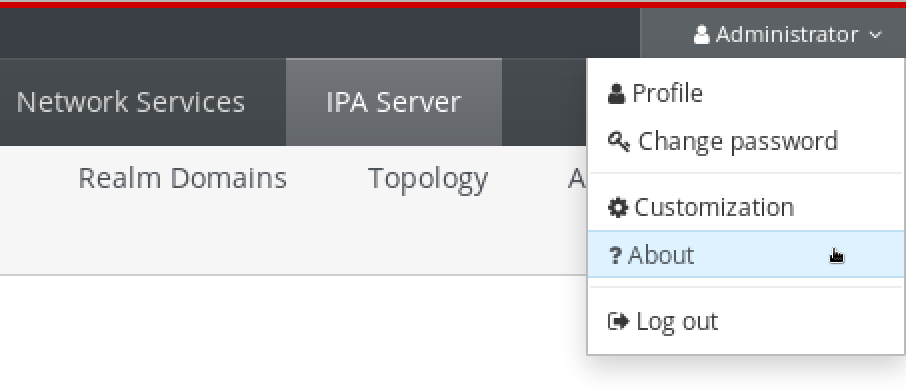- Displaying Version with
ipacommands From the command line, use the
ipa --versioncommand.[root@server ~]# ipa --version VERSION: 4.8.0, API_VERSION: 2.233
- Displaying Version with rpm commands
If IdM services are not operating properly, you can use the
rpmutility to determine the version number of theipa-serverpackage that is currently installed.[root@server ~]# rpm -q ipa-server ipa-server-4.8.0-11.module+el8.1.0+4247+9f3fd721.x86_64
Chapter 15. Installing an IdM replica
The following sections describe how to install an Identity Management (IdM) replica based on an existing server. The replica installation process copies the configuration of the existing server, and installs the replica based on that configuration.
Install one IdM replica at a time. The installation of multiple replicas at the same time is not supported.
Before installing a replica, the target system must be authorized for enrollment in the IdM domain. See:
For the replica installation procedures, see:
After the installation, see:
15.1. Prerequisites for installing a replica on an IdM client
When installing a replica on an existing client, choose one of the following authorization methods.
- A privileged user’s credentials
Choose this method to authorize the replica installation by providing a privileged user’s credentials:
Log in as the privileged user before running the
ipa-replica-installutility. The default privileged user isadmin:$ kinit admin- Let Identity Management (IdM) prompt you for the credentials interactively. This is the default behavior.
- The
ipaservershost group Choose this method to authorize the replica installation by adding the client to the
ipaservershost group. Membership inipaserversgrants the machine elevated privileges analogous to the administrator’s credentials.To add the client as a member of
ipaservers:$ kinit admin$ ipa hostgroup-add-member ipaservers --hosts replica.example.com Host-group: ipaservers Description: IPA server hosts Member hosts: server.idm.example.com, client.example.com ------------------------- Number of members added 1 -------------------------
15.2. Prerequisites for installing a replica on a system outside the IdM domain
When you run the ipa-replica-install utility on a system that has not yet been enrolled in the Identity Management (IdM) domain, ipa-replica-install first enrolls the system as a client and then installs the replica components.
When installing a replica on a system outside the IdM domain, choose one of the following authorization methods.
- A privileged user’s credentials
Using this method, the replica installation is authorized by providing a privileged user’s credentials. The default privileged user is
admin.To use this method, add the principal name and password options (
--principal admin --admin-password password) toipa-replica-installdirectly during the installation.
- A random password generated on an IdM server
Using this method, the replica installation is authorized by providing a random password for one-time enrollment.
To generate the random password for the future replica and add the future replica system to the
ipaservershost group, use these commands on any server in the domain:Log in as the administrator.
$ kinit admin
Add the new machine as an IdM host. Use the
--randomoption with theipa host-addcommand to generate a random one-time password to be used for the replica installation.$ ipa host-add replica.example2.com --random -------------------------------------------------- Added host "replica.example2.com" -------------------------------------------------- Host name: replica.example2.com Random password: W5YpARl=7M.n Password: True Keytab: False Managed by: server.example.comThe generated password will become invalid after you use it to enroll the machine into the IdM domain. It will be replaced with a proper host keytab after the enrollment is finished.
Add the machine to the
ipaservershost group.$ ipa hostgroup-add-member ipaservers --hosts replica.example2.com Host-group: ipaservers Description: IPA server hosts Member hosts: server.example.com, replica.example2.com ------------------------- Number of members added 1 -------------------------Membership in
ipaserversgrants the machine elevated privileges required to set up the necessary server services.
15.3. Installing an IdM replica with integrated DNS
This procedure describes installing a replica:
- With integrated DNS
- Without a certificate authority (CA) in an Identity Management (IdM) environment in which a CA is already installed. The replica will forward all certificate operations to the IdM server with a CA installed.
Procedure
Run
ipa-replica-installwith these options:-
--setup-dnsto configure the replica as the DNS server -
--forwarderto specify a forwarder, or--no-forwarderif you do not want to use any forwarders. To specify multiple forwarders for failover reasons, use--forwardermultiple times.
For example, to set up a replica with an integrated DNS server that forwards all DNS requests not managed by the IdM servers to the DNS server running on IP 192.0.2.1:
# ipa-replica-install --setup-dns --forwarder 192.0.2.1NoteThe
ipa-replica-installutility accepts a number of other options related to DNS settings, such as--no-reverseor--no-host-dns. For more information about them, see the ipa-replica-install(1) man page.-
15.4. Installing an IdM replica with a CA
This procedure describes installing a replica:
- Without integrated DNS
- With a certificate authority (CA)
When configuring a replica with a CA, the CA configuration of the replica must mirror the CA configuration of the master server.
For example, if the server includes an integrated Identity Management (IdM) CA as the root CA, the replica must also be installed with an integrated CA as the root CA. No other CA configuration is available in this case.
The inclusion of the --setup-ca option in the ipa-replica-install command takes care of copying the CA configuration of the initial server.
Procedure
Run
ipa-replica-installwith the--setup-caoption.# ipa-replica-install --setup-ca
15.5. Installing an IdM replica without a CA
This procedure describes installing a replica:
- Without integrated DNS
- Without a certificate authority (CA) by providing the required certificates manually. The assumption here is that the master server was also installed without a CA.
You cannot install a server or replica using self-signed third-party server certificates because the imported certificate files must contain the full CA certificate chain of the CA that issued the LDAP and Apache server certificates.
Procedure
Run
ipa-replica-install, and provide the required certificate files by adding these options:-
--dirsrv-cert-file -
--dirsrv-pin -
--http-cert-file -
--http-pin
For details about the files that are provided using these options, see Section 4.1, “Certificates required to install an IdM server without a CA”.
For example:
# ipa-replica-install \ --dirsrv-cert-file /tmp/server.crt \ --dirsrv-cert-file /tmp/server.key \ --dirsrv-pin secret \ --http-cert-file /tmp/server.crt \ --http-cert-file /tmp/server.key \ --http-pin secret
NoteDo not add the
--ca-cert-fileoption. Theipa-replica-installutility takes this part of the certificate information automatically from the master server.-
15.7. Testing an IdM replica
After creating a replica, check if the replica replicates data as expected. You can use the following procedure.
Procedure
Create a user on the new replica:
[admin@new_replica ~]$ ipa user-add test_userMake sure the user is visible on another replica:
[admin@another_replica ~]$ ipa user-show test_user
15.8. Connections performed during an IdM replica installation
Table 15.1, “Requests performed during an IdM replica installation” lists the operations performed by ipa-replica-install, the Identity Management (IdM) replica installation tool.
Table 15.1. Requests performed during an IdM replica installation
| Operation | Protocol used | Purpose |
|---|---|---|
| DNS resolution against the DNS resolvers configured on the client system | DNS | To discover the IP addresses of IdM masters |
| Requests to ports 88 (TCP/TCP6 and UDP/UDP6) on the discovered IdM masters | Kerberos | To obtain a Kerberos ticket |
| JSON-RPC calls to the IdM Apache-based web-service on the discovered or configured IdM masters | HTTPS | IdM client enrollment; replica keys retrieval and certificate issuance if required |
| Requests over TCP/TCP6 to port 389 on the IdM server, using SASL GSSAPI authentication, plain LDAP, or both | LDAP | IdM client enrollment; CA certificate chain retrieval; LDAP data replication |
| Requests over TCP/TCP6 to port 22 on IdM server | SSH | To check if the connection is working |
| (optionally) Access over port 8443 (TCP/TCP6) on the IdM master | HTTPS | To administer the Certificate Authority on the IdM master (only during IdM master and replica installation) |
Chapter 16. Uninstalling an IdM replica
As an administrator, you can remove an Identity Management (IdM) server from the topology.
This procedure describes how you can uninstall an example server named server.idm.example.com.
Prerequisites
- Before uninstalling a server that serves as a certificate authority (CA), key recovery authority (KRA), or DNS server, make sure these services are running on another server in the domain.
Removing the last server that serves as a CA, KRA, or DNS server seriously disrupts the Identity Management (IdM) functionality.
Procedure
On all the servers in the topology that have a replication agreement with
server.idm.example.com, use theipa server-delcommand to delete the replica from the topology:[root@another_server ~]# ipa server-del server.idm.example.comOn
server.idm.example.com, use theipa-server-install --uninstallcommand:[root@server ~]# ipa-server-install --uninstall ... Are you sure you want to continue with the uninstall procedure? [no]: yes-
Make sure all name server (NS) DNS records pointing to
server.idm.example.comare deleted from your DNS zones. This applies regardless of whether you use integrated DNS managed by IdM or external DNS.
Chapter 17. Installing the IdM Healthcheck tool
This section describes the IdM Healthcheck tool and how to install it.
Prerequisites
- The Healthcheck tool is only available on RHEL 8.1 or later.
17.1. Healthcheck in IdM
The Healthcheck tool in Identity Management (IdM) helps find issues that may impact the health of your IdM environment.
The Healthcheck tool is a command line tool that can be used without Kerberos authentication.
17.1.1. Modules are Independent
Healthcheck consists of independent modules which test for:
- Replication issues
- Certificate validity
- Certificate Authority infrastructure issues
- IdM and Active Directory trust issues
- Correct file permissions and ownership settings
17.1.2. Two output formats
Healthcheck generates the following outputs:
- Human-readable output
- Machine-readable output in JSON format
The output destination for both human and JSON is standard output by default. You can specify a different destination with the --output-file option.
17.1.3. Results
Each Healthcheck module returns one of the following results:
- SUCCESS
- configured as expected
- WARNING
- not an error, but worth keeping an eye on or evaluating
- ERROR
- not configured as expected
- CRITICAL
- not configured as expected, with a high possibility for impact
17.1.4. Running IdM Healthcheck
Healthcheck can be run:
Manually
[root@master ~]# ipa-healthcheckFor all options, see the man page:
man ipa-healthcheck.- Automatically using log rotation.
17.2. Installing IdM Healthcheck
Procedure
Install the
ipa-healthcheckpackage:[root@master ~]# dnf install ipa-healthcheck
Verification steps
Use the
--failures-onlyoption to haveipa-healthcheckonly report errors. A fully-functioning IdM installation returns an empty result of[].[root@master ~]# ipa-healthcheck --failures-only []
Additional resources
-
Use
ipa-healthcheck --helpto see all supported arguments.
17.3. Additional resources
See the following sections of Configuring and managing Identity Management for examples of using IdM Healthcheck.
Chapter 18. Installing an Identity Management server using an Ansible playbook
18.1. Ansible and its advantages for installing IdM
Ansible is an automation tool used to configure systems, deploy software, and perform rolling updates. Ansible includes support for Identity Management (IdM), and you can use Ansible modules to automate installation tasks such as the setup of an IdM server, replica, client, or an entire IdM topology.
Advantages of using Ansible to install IdM
The following list presents advantages of installing Identity Management using Ansible in contrast to manual installation.
- You do not need to log into the managed node.
- You do not need to configure settings on each host to be deployed individually. Instead, you can have one inventory file to deploy a complete cluster.
- You can reuse an inventory file later for management tasks, for example to add users and hosts. You can reuse an inventory file even for such tasks as are not related to IdM.
18.2. IdM server installation using an Ansible playbook
The following sections describe how to configure a system as an IdM server by using Ansible. Configuring a system as an IdM server establishes an IdM domain and enables the system to offer IdM services to IdM clients. The deployment is managed by the ipaserver Ansible role.
Before installing an IdM server using Ansible, ensure that you understand Ansible and IdM concepts. Ensure that you understand the following terms that are used in this chapter:
- Ansible roles
- Ansible nodes
- Ansible inventory
- Ansible tasks
- Ansible modules
- Ansible plays and playbooks
Overview
The installation consists of the following parts:
18.3. Installing the ansible-freeipa package
Prerequisites
On the managed node:
- Ensure that the managed node is a Red Hat Enterprise Linux 8 system with a static IP address and a working package manager.
On the controller:
- Ensure that the controller is a Red Hat Enterprise Linux system with a valid subscription. If this is not the case, see the official Ansible documentation Installation guide for alternative installation instructions.
-
Ensure that you can reach the managed node over the
SSHprotocol from the controller. Check that the managed node is listed in the/root/.ssh/known_hostsfile of the controller.
Procedure
Run the following procedure on the Ansible controller.
Enable the required repository:
# subscription-manager repos --enable ansible-2.8-for-rhel-8-x86_64-rpmsInstall Ansible:
# yum install ansibleInstall the IdM Ansible roles:
# yum install ansible-freeipaThe roles are installed to the
/usr/share/ansible/roles/directory.
18.4. Ansible roles location in the file system
By default the ansible-freeipa roles are installed to the /usr/share/ansible/roles/ directory. The structure of the ansible-freeipa package is as follows:
The
/usr/share/ansible/roles/directory stores theipaserver,ipareplica, andipaclientroles on the Ansible controller. Each role directory stores examples, a basic overview, the licence and documentation about the role in a README.md Markdown file.[root@server]# ls -1 /usr/share/ansible/roles/ ipaclient ipareplica ipaserverThe
/usr/share/doc/ansible-freeipa/directory stores the documentation about individual roles and the topology in README.md Markdown files. It also stores theplaybooks/subdirectory (see below).[root@server]# ls -1 /usr/share/doc/ansible-freeipa/ playbooks README-client.md README.md README-replica.md README-server.md README-topology.mdThe
/usr/share/doc/ansible-freeipa/playbooks/directory stores the example playbooks:[root@server]# ls -1 /usr/share/doc/ansible-freeipa/playbooks/ install-client.yml install-cluster.yml install-replica.yml install-server.yml uninstall-client.yml uninstall-cluster.yml uninstall-replica.yml uninstall-server.yml
18.5. Deploying an IdM server with an integrated CA as the root CA using an Ansible playbook
18.5.1. Setting the parameters for a deployment with an integrated CA as the root CA
Complete this procedure to configure the inventory file for installing an IdM server with an integrated CA as the root CA.
Procedure
Open the inventory file for editing. Specify the fully-qualified domain names (
FQDN) of the host you want to use as an IdM server. Ensure that theFQDNmeets the following criteria:- Only alphanumeric characters and hyphens (-) are allowed. For example, underscores are not allowed and can cause DNS failures.
- The host name must be all lower-case.
- Specify the IdM domain and realm information.
-
Specify if you want the IdM server to have an integrated DNS and if you want it to use forwarders from the
/etc/resolv.conffile. Specify the passwords for
adminand for theDirectory Manager. Use the Ansible Vault to store the password, and reference the Vault file from the playbook file. Alternatively and less securely, specify the passwords directly in the inventory file.Example of an inventory file with the required server information (excluding the passwords)
[ipaserver] server.idm.example.com [ipaserver:vars] ipaserver_domain=idm.example.com ipaserver_realm=IDM.EXAMPLE.COM ipaserver_setup_dns=yes ipaserver_auto_forwarders=yes [...]
Example of an inventory file with the required server information (including the passwords)
[ipaserver] server.idm.example.com [ipaserver:vars] ipaserver_domain=idm.example.com ipaserver_realm=IDM.EXAMPLE.COM ipaserver_setup_dns=yes ipaserver_auto_forwarders=yes ipaadmin_password=MySecretPassword123 ipadm_password=MySecretPassword234 [...]
Example playbook to set up an IdM server using admin and Directory Manager passwords stored in an Ansible Vault file
--- - name: Playbook to configure IPA server hosts: ipaserver become: true vars_files: - playbook_sensitive_data.yml roles: - role: ipaserver state: presentExample playbook to set up an IdM server using admin and Directory Manager passwords from an inventory file
--- - name: Playbook to configure IPA server hosts: ipaserver become: true roles: - role: ipaserver state: present
For details on installing the IdM server and the available options, see Part I, “Installing Identity Management”.
18.5.2. Deploying an IdM server with an integrated CA as the root CA using an Ansible playbook
Complete this procedure to deploy an IdM server with an integrated certificate authority (CA) as the root CA using an Ansible playbook.
Procedure
Run the
ansible-playbookcommand with the name of the playbook file, for exampleinstall-server.yml. Specify the inventory file with the-ioption:$ ansible-playbook -v -i <path_to_inventory_directory>/hosts <path_to_playbooks_directory>/install-server.ymlSpecify the level of verbosity by using the
-v,-vv, or-vvvoption.You can view the output of the Ansible playbook script on the command-line interface (CLI). The following output shows that the script has run successfully as 0 tasks have failed:
PLAY RECAP server.idm.example.com : ok=18 changed=10 unreachable=0 failed=0 skipped=21 rescued=0 ignored=0
You have installed an IdM server on your host using an Ansible playbook.
18.6. Deploying an IdM server with an external CA as the root CA using an Ansible playbook
18.6.1. Setting the parameters for a deployment with an external CA as the root CA
Complete this procedure to configure the inventory file for installing an IdM server with an external CA as the root CA.
Procedure
Open the inventory file for editing. Specify the fully-qualified domain names (
FQDN) of the host you want to use as an IdM server. Ensure that theFQDNmeets the following criteria:- Only alphanumeric characters and hyphens (-) are allowed. For example, underscores are not allowed and can cause DNS failures.
- The host name must be all lower-case.
- Specify the IdM domain and realm information.
-
Specify if you want the IdM server to have an integrated DNS and if you want it to use forwarders from the
/etc/resolv.conffile. Specify the passwords for
adminand for theDirectory Manager. Use the Ansible Vault to store the password, and reference the Vault file from the playbook file. Alternatively and less securely, specify the passwords directly in the inventory file.Example of an inventory file with the required server information (excluding the passwords)
[ipaserver] server.idm.example.com [ipaserver:vars] ipaserver_domain=idm.example.com ipaserver_realm=IDM.EXAMPLE.COM ipaserver_setup_dns=yes ipaserver_auto_forwarders=yes [...]
Example of an inventory file with the required server information (including the passwords)
[ipaserver] server.idm.example.com [ipaserver:vars] ipaserver_domain=idm.example.com ipaserver_realm=IDM.EXAMPLE.COM ipaserver_setup_dns=yes ipaserver_auto_forwarders=yes ipaadmin_password=MySecretPassword123 ipadm_password=MySecretPassword234 [...]
Create a playbook for the first step of the installation. Enter instructions for generating the certificate signing request (CSR) and copying it from the controller to the managed node.
Figure 18.1. Example playbook to set up an IdM server with an externally signed CA using admin and Directory Manager passwords stored in an Ansible Vault file: First step

Create another playbook for the final step of the installation.
Figure 18.2. Example playbook to set up an IdM server with an externally signed CA using admin and Directory Manager passwords stored in an Ansible Vault file: Final step

For details on the options available to you when installing an IdM server with an externally signed CA, see Chapter 3, Installing an IdM server: With integrated DNS, with an external CA as the root CA.
18.6.2. Deploying an IdM server with an external CA as the root CA using an Ansible playbook
Complete this procedure to deploy an IdM server with an external certificate authority (CA) as the root CA using an Ansible playbook.
Procedure
Run the
ansible-playbookcommand with the name of the playbook file that contains instructions for the first step of the installation, for exampleinstall-server-step1.yml. Specify the inventory file with the-ioption:$ ansible-playbook -v -i <path_to_inventory_directory>/host.server <path_to_playbooks_directory>/install-server-step1.ymlSpecify the level of verbosity by using the
-v,-vvor-vvvoption.You can view the output of the Ansible playbook script on the command-line interface (CLI). The following output shows that the script has run successfully as 0 tasks have failed:
PLAY RECAP server.idm.example.com : ok=18 changed=10 unreachable=0 failed=0 skipped=21 rescued=0 ignored=0-
Locate the
ipa.csrcertificate signing request file on the controller and submit it to the external CA. - Place the IdM CA certificate signed by the external CA in the controller file system so that the playbook in the next step can find it.
Run the
ansible-playbookcommand with the name of the playbook file that contains instructions for the final step of the installation, for exampleinstall-server-step2.yml. Specify the inventory file with the-ioption:$ ansible-playbook -v -i <path_to_inventory_directory>/host.server <path_to_playbooks_directory>/install-server-step2.yml
You have installed an IdM server with an externally signed CA on your host using an Ansible playbook.
Chapter 19. Installing an Identity Management replica using an Ansible playbook
19.1. Ansible and its advantages for installing IdM
Ansible is an automation tool used to configure systems, deploy software, and perform rolling updates. Ansible includes support for Identity Management (IdM), and you can use Ansible modules to automate installation tasks such as the setup of an IdM server, replica, client, or an entire IdM topology.
Advantages of using Ansible to install IdM
The following list presents advantages of installing Identity Management using Ansible in contrast to manual installation.
- You do not need to log into the managed node.
- You do not need to configure settings on each host to be deployed individually. Instead, you can have one inventory file to deploy a complete cluster.
- You can reuse an inventory file later for management tasks, for example to add users and hosts. You can reuse an inventory file even for such tasks as are not related to IdM.
19.2. IdM replica installation using an Ansible playbook
The following sections describe how to configure a system as an IdM replica by using Ansible. Configuring a system as an IdM replica enrolls it into an IdM domain and enables the system to use IdM services on IdM servers in the domain.
The deployment is managed by the ipareplica Ansible role. The role can use the autodiscovery mode for identifying the IdM servers, domain and other settings. However, if you deploy multiple replicas in a tier-like model, with different groups of replicas being deployed at different times, you must defined specific servers or replicas for each group.
Before installing an IdM replica using Ansible, ensure that you understand Ansible and IdM concepts. Ensure that you understand the following terms that are used in this chapter:
- Ansible roles
- Ansible nodes
- Ansible inventory
- Ansible tasks
- Ansible modules
- Ansible plays and playbooks
Overview
The installation consists of the following parts:
19.3. Installing the ansible-freeipa package
Prerequisites
On the managed node:
- Ensure that the managed node is a Red Hat Enterprise Linux 8 system with a static IP address and a working package manager.
On the controller:
- Ensure that the controller is a Red Hat Enterprise Linux system with a valid subscription. If this is not the case, see the official Ansible documentation Installation guide for alternative installation instructions.
-
Ensure that you can reach the managed node over the
SSHprotocol from the controller. Check that the managed node is listed in the/root/.ssh/known_hostsfile of the controller.
Procedure
Run the following procedure on the Ansible controller.
Enable the required repository:
# subscription-manager repos --enable ansible-2.8-for-rhel-8-x86_64-rpmsInstall Ansible:
# yum install ansibleInstall the IdM Ansible roles:
# yum install ansible-freeipaThe roles are installed to the
/usr/share/ansible/roles/directory.
19.4. Ansible roles location in the file system
By default the ansible-freeipa roles are installed to the /usr/share/ansible/roles/ directory. The structure of the ansible-freeipa package is as follows:
The
/usr/share/ansible/roles/directory stores theipaserver,ipareplica, andipaclientroles on the Ansible controller. Each role directory stores examples, a basic overview, the licence and documentation about the role in a README.md Markdown file.[root@server]# ls -1 /usr/share/ansible/roles/ ipaclient ipareplica ipaserverThe
/usr/share/doc/ansible-freeipa/directory stores the documentation about individual roles and the topology in README.md Markdown files. It also stores theplaybooks/subdirectory (see below).[root@server]# ls -1 /usr/share/doc/ansible-freeipa/ playbooks README-client.md README.md README-replica.md README-server.md README-topology.mdThe
/usr/share/doc/ansible-freeipa/playbooks/directory stores the example playbooks:[root@server]# ls -1 /usr/share/doc/ansible-freeipa/playbooks/ install-client.yml install-cluster.yml install-replica.yml install-server.yml uninstall-client.yml uninstall-cluster.yml uninstall-replica.yml uninstall-server.yml
19.5. Setting the parameters of the IdM replica deployment
Before you deploy a target host as an IdM replica, configure the following settings:
19.5.1. Specifying the base, server and client variables for installing the IdM replica
Complete this procedure to configure the inventory file for installing an IdM replica.
Procedure
Open the inventory file for editing. Specify the fully-qualified domain names (
FQDN) of the hosts to become IdM replicas. TheFQDNsmust be valid DNS names:- Only numbers, alphabetic characters, and hyphens (-) are allowed. For example, underscores are not allowed and can cause DNS failures.
The host name must be all lower-case.
Example of a simple inventory hosts file with only the replicas' FQDN defined
[ipareplicas] replica1.idm.example.com replica2.idm.example.com replica3.idm.example.com [...]
If the IdM master server is already deployed and the SRV records are set properly in the IdM DNS zone, the script automatically discovers all the other required values.
Optionally, provide additional information in the inventory file based on which of the following scenarios is closest to yours:
Scenario 1
If you want to avoid autodiscovery and have all replicas listed in the
[ipareplicas]section use a specific IdM server, set the server in the[ipaservers]section of the inventory file.Example inventory hosts file with the FQDN of the IdM server and replicas defined
[ipaservers] server.idm.example.com [ipareplicas] replica1.idm.example.com replica2.idm.example.com replica3.idm.example.com [...]
Scenario 2
Alternatively, if you want to avoid autodiscovery but want to deploy specific replicas with specific servers, set the servers for specific replicas individually in the
[ipareplicas]section in the inventory file.Example inventory file with a specific IdM server defined for a specific replica
[ipaservers] server.idm.example.com replica1.idm.example.com [ipareplicas] replica2.idm.example.com replica3.idm.example.com ipareplica_servers=replica1.idm.example.comIn the example above,
replica3.idm.example.comuses the already deployedreplica1.idm.example.comas its master server.Scenario 3
If you are deploying several replicas in one batch and time is a concern to you, multitier replica deployment can be useful for you. Define specific groups of replicas in the inventory file, for example
[ipareplicas_tier1]and[ipareplicas_tier2], and design separate plays for each group in theinstall-replica.ymlplaybook.Example inventory file with replica tiers defined
[ipaservers] server.idm.example.com [ipareplicas_tier1] replica1.idm.example.com [ipareplicas_tier2] replica2.idm.example.com \ ipareplica_servers=replica1.idm.example.com,server.idm.example.com
The first entry in
ipareplica_serverswill be used as the master. The second entry will be used as a fallback option. When using multiple tiers for deploying IdM replicas, you must have separate tasks in the playbook to first deploy replicas from tier1 and then replicas from tier2:Example of a playbook file with different plays for different replica groups
--- - name: Playbook to configure IPA replicas (tier1) hosts: ipareplicas_tier1 become: true roles: - role: ipareplica state: present - name: Playbook to configure IPA replicas (tier2) hosts: ipareplicas_tier2 become: true roles: - role: ipareplica state: present
19.5.2. Specifying the credentials for installing the IdM replica using an Ansible playbook
Complete this procedure to configure the authorization for installing the IdM replica.
Procedure
Specify the password of a user authorized to deploy replicas, for example the IdM
admin.Red Hat recommends using the Ansible Vault to store the password, and referencing the Vault file from the playbook file, for example
install-replica.yml:Example playbook file using principal from inventory file and password from an Ansible Vault file
- name: Playbook to configure IPA replicas hosts: ipareplicas become: true vars_files: -
playbook_sensitive_data.ymlroles: - role: ipareplica state: presentFor details how to use Ansible Vault, see the official Ansible Vault documentation.
Less securely, provide the credentials of
admindirectly in the inventory file. Use theipaadmin_passwordoption in the[ipareplicas:vars]section of the inventory file. The inventory file and theinstall-replica.ymlplaybook file can then look as follows:Example inventory hosts.replica file
[...] [ipareplicas:vars] ipaadmin_password=Secret123Example playbook using principal and password from inventory file
- name: Playbook to configure IPA replicas hosts: ipareplicas become: true roles: - role: ipareplica state: presentAlternatively but also less securely, provide the credentials of another user authorized to deploy a replica directly in the inventory file. To specify a different authorized user, use the
ipaadmin_principaloption for the user name, and theipaadmin_passwordoption for the password. The inventory file and theinstall-replica.ymlplaybook file can then look as follows:Example inventory hosts.replica file
[...] [ipareplicas:vars] ipaadmin_principal=my_admin ipaadmin_password=my_admin_secret123
Example playbook using principal and password from inventory file
- name: Playbook to configure IPA replicas hosts: ipareplicas become: true roles: - role: ipareplica state: present
Additional resources
-
For details on the options accepted by the
ipareplicaAnsible role, see the/usr/share/ansible/roles/ipareplica/README.mdMarkdown file.
19.6. Deploying an IdM replica using an Ansible playbook
Complete this procedure to use an Ansible playbook to deploy an IdM replica.
Procedure
To install an IdM replica using an Ansible playbook, use the
ansible-playbookcommand with the name of the playbook file, for exampleinstall-replica.yml. Specify the inventory file with the-ioption:$ ansible-playbook -v -i <path_to_inventory_directory>/hosts.replica <path_to_playbooks_directory>/install-replica.ymlSpecify the level of verbosity by using the
-v,-vvor-vvvoption.Ansible informs you about the execution of the Ansible playbook script. The following output shows that the script has run successfully as 0 tasks have failed:
PLAY RECAP replica.idm.example.com : ok=18 changed=10 unreachable=0 failed=0 skipped=21 rescued=0 ignored=0
You have now installed an IdM replica.
Chapter 20. Installing an Identity Management client using an Ansible playbook
20.1. Ansible and its advantages for installing IdM
Ansible is an automation tool used to configure systems, deploy software, and perform rolling updates. Ansible includes support for Identity Management (IdM), and you can use Ansible modules to automate installation tasks such as the setup of an IdM server, replica, client, or an entire IdM topology.
Advantages of using Ansible to install IdM
The following list presents advantages of installing Identity Management using Ansible in contrast to manual installation.
- You do not need to log into the managed node.
- You do not need to configure settings on each host to be deployed individually. Instead, you can have one inventory file to deploy a complete cluster.
- You can reuse an inventory file later for management tasks, for example to add users and hosts. You can reuse an inventory file even for such tasks as are not related to IdM.
20.2. IdM client installation using an Ansible playbook
The following sections describe how to configure a system as an Identity Management (IdM) client by using Ansible. Configuring a system as an IdM client enrolls it into an IdM domain and enables the system to use IdM services on IdM servers in the domain.
The deployment is managed by the ipaclient Ansible role. By default, the role uses the autodiscovery mode for identifying the IdM servers, domain and other settings. The role can be modified to have the Ansible playbook use the settings specified, for example in the inventory file.
Before installing an IdM client using Ansible, ensure that you understand Ansible and IdM concepts. Ensure that you understand the following terms that are used in this chapter:
- Ansible roles
- Ansible nodes
- Ansible inventory
- Ansible tasks
- Ansible modules
- Ansible plays and playbooks
Overview
The installation consists of the following parts:
- Installing the ansible-freeipa package;
Setting the parameters of the IdM client deployment to correspond to your deployment scenario:
- Setting the parameters of the inventory file for the autodiscovery client installation mode;
- Setting the parameters of the inventory file for when autodiscovery is not possible during client installation;
- Checking the parameters in install-client.yml;
- Deploying an IdM client using an Ansible playbook;
- Testing an Identity Management client after installation.
20.3. Installing the ansible-freeipa package
Prerequisites
On the managed node:
- Ensure that the managed node is a Red Hat Enterprise Linux 8 system with a static IP address and a working package manager.
On the controller:
- Ensure that the controller is a Red Hat Enterprise Linux system with a valid subscription. If this is not the case, see the official Ansible documentation Installation guide for alternative installation instructions.
-
Ensure that you can reach the managed node over the
SSHprotocol from the controller. Check that the managed node is listed in the/root/.ssh/known_hostsfile of the controller.
Procedure
Run the following procedure on the Ansible controller.
Enable the required repository:
# subscription-manager repos --enable ansible-2.8-for-rhel-8-x86_64-rpmsInstall Ansible:
# yum install ansibleInstall the IdM Ansible roles:
# yum install ansible-freeipaThe roles are installed to the
/usr/share/ansible/roles/directory.
20.4. Ansible roles location in the file system
By default the ansible-freeipa roles are installed to the /usr/share/ansible/roles/ directory. The structure of the ansible-freeipa package is as follows:
The
/usr/share/ansible/roles/directory stores theipaserver,ipareplica, andipaclientroles on the Ansible controller. Each role directory stores examples, a basic overview, the licence and documentation about the role in a README.md Markdown file.[root@server]# ls -1 /usr/share/ansible/roles/ ipaclient ipareplica ipaserverThe
/usr/share/doc/ansible-freeipa/directory stores the documentation about individual roles and the topology in README.md Markdown files. It also stores theplaybooks/subdirectory (see below).[root@server]# ls -1 /usr/share/doc/ansible-freeipa/ playbooks README-client.md README.md README-replica.md README-server.md README-topology.mdThe
/usr/share/doc/ansible-freeipa/playbooks/directory stores the example playbooks:[root@server]# ls -1 /usr/share/doc/ansible-freeipa/playbooks/ install-client.yml install-cluster.yml install-replica.yml install-server.yml uninstall-client.yml uninstall-cluster.yml uninstall-replica.yml uninstall-server.yml
20.5. Setting the parameters of the IdM client deployment
Before you deploy a target host as an IdM client, configure the deployment instructions on the control node. Additionally, configure the target host parameters depending on which of the following options you are planning:
20.5.1. Setting the parameters of the inventory file for the autodiscovery client installation mode
To install an Identity Management client using an Ansible playbook, provide the following information in an inventory file, for example inventory/hosts:
- the information about the host
- the authorization for the task
The inventory file can be in one of many formats, depending on the inventory plugins you have. The INI-like format is one of Ansible’s defaults and is used in the examples below.
Procedure
Specify the fully-qualified hostname (
FQDN) of the host to become an IdM client. The fully qualified domain name must be a valid DNS name:- Only numbers, alphabetic characters, and hyphens (-) are allowed. For example, underscores are not allowed and can cause DNS failures.
The host name must be all lower-case. No capital letters are allowed.
If the SRV records are set properly in the IdM DNS zone, the script automatically discovers all the other required values.
Example of a simple inventory hosts file with only the client FQDN defined
[ipaclients] client.idm.example.com [...]
Specify the credentials for enrolling the client. The following authentication methods are available:
The password of a user authorized to enroll clients. This is the default option.
Red Hat recommends using the Ansible Vault to store the password, and referencing the Vault file from the playbook file, for example
install-client.yml, directly:Example playbook file using principal from inventory file and password from an Ansible Vault file
- name: Playbook to configure IPA clients with username/password hosts: ipaclients become: true vars_files: -
playbook_sensitive_data.ymlroles: - role: ipaclient state: presentLess securely, provide the credentials of
adminusing theipaadmin_passwordoption in the[ipaclients:vars]section of theinventory/hostsfile. Alternatively, to specify a different authorized user, use theipaadmin_principaloption for the user name, and theipaadmin_passwordoption for the password. Theinventory/hostsinventory file and theinstall-client.ymlplaybook file can then look as follows:Example inventory hosts file
[...] [ipaclients:vars] ipaadmin_principal=my_admin ipaadmin_password=Secret123
Example Playbook using principal and password from inventory file
- name: Playbook to unconfigure IPA clients hosts: ipaclients become: true roles: - role: ipaclient state: true
The client keytab from the previous enrollment if it is still available:
-
This option is available if the system was previously enrolled as an Identity Management client. To use this authentication method, uncomment the
#ipaclient_keytaboption, specifying the path to the file storing the keytab, for example in the[ipaclient:vars]section ofinventory/hosts.
-
This option is available if the system was previously enrolled as an Identity Management client. To use this authentication method, uncomment the
A random, one-time password (OTP) to be generated during the enrollment. To use this authentication method, use the
ipaclient_use_otp=yesoption in your inventory file. For example, you can uncomment theipaclient_use_otp=yesoption in the[ipaclients:vars]section of theinventory/hostsfile. Note that with OTP you must also specify one of the following options:-
The password of a user authorized to enroll clients, for example by providing a value for
ipaadmin_passwordin the[ipaclients:vars]section of theinventory/hostsfile. -
The admin keytab, for example by providing a value for
ipaadmin_keytabin the[ipaclients:vars]section ofinventory/hosts.
-
The password of a user authorized to enroll clients, for example by providing a value for
Additional resources
-
For details on the options accepted by the
ipaclientAnsible role, see the/usr/share/ansible/roles/ipaclient/README.mdREADME file.
20.5.2. Setting the parameters of the inventory file when autodiscovery is not possible during client installation
To install an Identity Management client using an Ansible playbook, provide the following information in an inventory file, for example inventory/hosts:
- the information about the host, the IdM server and the IdM domain or the IdM realm
- the authorization for the task
The inventory file can be in one of many formats, depending on the inventory plugins you have. The INI-like format is one of Ansible’s defaults and is used in the examples below.
Procedure
Specify the fully-qualified hostname (
FQDN) of the host to become an IdM client. The fully qualified domain name must be a valid DNS name:- Only numbers, alphabetic characters, and hyphens (-) are allowed. For example, underscores are not allowed and can cause DNS failures.
- The host name must be all lower-case. No capital letters are allowed.
Specify other options in the relevant sections of the
inventory/hostsfile:-
the
FQDNof the servers in the[ipaservers]section to indicate which IdM server the client will be enrolled with one of the two following options:
-
the
ipaclient_domainoption in the[ipaclients:vars]section to indicate the DNS domain name of the IdM server the client will be enrolled with the
ipaclient_realmoption in the[ipaclients:vars]section to indicate the name of the Kerberos realm controlled by the IdM serverExample of an inventory hosts file with the client FQDN, the server FQDN and the domain defined
[ipaclients] client.idm.example.com [ipaservers] server.idm.example.com [ipaclients:vars] ipaclient_domain=idm.example.com [...]
-
the
-
the
Specify the credentials for enrolling the client. The following authentication methods are available:
The password of a user authorized to enroll clients. This is the default option.
Red Hat recommends using the Ansible Vault to store the password, and referencing the Vault file from the playbook file, for example
install-client.yml, directly:Example playbook file using principal from inventory file and password from an Ansible Vault file
- name: Playbook to configure IPA clients with username/password hosts: ipaclients become: true vars_files: -
playbook_sensitive_data.ymlroles: - role: ipaclient state: presentLess securely, provide the credentials of
adminusing theipaadmin_passwordoption in the[ipaclients:vars]section of theinventory/hostsfile. Alternatively, to specify a different authorized user, use theipaadmin_principaloption for the user name, and theipaadmin_passwordoption for the password. Theinstall-client.ymlplaybook file can then look as follows:Example inventory hosts file
[...] [ipaclients:vars] ipaadmin_principal=my_admin ipaadmin_password=Secret123
Example Playbook using principal and password from inventory file
- name: Playbook to unconfigure IPA clients hosts: ipaclients become: true roles: - role: ipaclient state: true
The client keytab from the previous enrollment if it is still available:
-
This option is available if the system was previously enrolled as an Identity Management client. To use this authentication method, uncomment the
ipaclient_keytaboption, specifying the path to the file storing the keytab, for example in the[ipaclient:vars]section ofinventory/hosts.
-
This option is available if the system was previously enrolled as an Identity Management client. To use this authentication method, uncomment the
A random, one-time password (OTP) to be generated during the enrollment. To use this authentication method, use the
ipaclient_use_otp=yesoption in your inventory file. For example, you can uncomment the#ipaclient_use_otp=yesoption in the[ipaclients:vars]section of theinventory/hostsfile. Note that with OTP you must also specify one of the following options:-
The password of a user authorized to enroll clients, for example by providing a value for
ipaadmin_passwordin the[ipaclients:vars]section of theinventory/hostsfile. -
The admin keytab, for example by providing a value for
ipaadmin_keytabin the[ipaclients:vars]section ofinventory/hosts.
-
The password of a user authorized to enroll clients, for example by providing a value for
Additional resources
-
For details on the options accepted by the
ipaclientAnsible role, see the/usr/share/ansible/roles/ipaclient/README.mdREADME file.
20.5.3. Checking the parameters in the install-client.yml file
The install-client.yml playbook file contains instructions for the IdM client deployment.
Open the file and check if the instructions in the playbook correspond to what you are planning for your deployment. The contents typically look like this:
--- - name: Playbook to configure IPA clients with username/password hosts: ipaclients become: true roles: - role: ipaclient state: presentThis is what the individual entries mean:
-
The hosts entry specifies the section of the
inventory/hostsfile where the ansible script searches theFQDNsof the hosts on which theipa-client-installscript shall be run. -
The
become: trueentry specifies that root’s credentials will be invoked during the execution of theipa-client-installscript. -
The
role: ipacliententry specifies the role that will be installed on the host: in this case, it is the ipa client role. -
The
state: presententry specifies that the client should be installed rather than uninstalled (absent).
-
The hosts entry specifies the section of the
20.5.4. Authorization options for IdM client enrollment using an Ansible playbook
This referential section presents individual authorization options for IdM client enrollment with examples of inventory and playbook files.
Table 20.1. Authorization options for IdM client enrollment using Ansible
| Authorization option | Note | Example inventory file | Example install-client.yml playbook file |
|---|---|---|---|
| Password of a user authorized to enroll a client: Option 1 | Password stored in Ansible vault |
[ipaclients:vars] [...] |
- name: Playbook to configure IPA clients with username/password
hosts: ipaclients
become: true
vars_files:
- playbook_sensitive_data.yml
roles:
- role: ipaclient
state: present
|
| Password of a user authorized to enroll a client: Option 2 | Password stored in inventory file |
[ipaclients:vars] ipaadmin_password=Secret123 |
- name: Playbook to configure IPA clients
hosts: ipaclients
become: true
roles:
- role: ipaclient
state: true
|
| A random, one-time password (OTP): Option 1 | OTP + administrator password |
[ipaclients:vars] ipaadmin_password=Secret123 ipaclient_use_otp=yes |
- name: Playbook to configure IPA clients
hosts: ipaclients
become: true
roles:
- role: ipaclient
state: true
|
| A random, one-time password (OTP): Option 2 | OTP + an admin keytab |
[ipaclients:vars] ipaadmin_keytab=/tmp/admin.keytab ipaclient_use_otp=yes |
- name: Playbook to configure IPA clients
hosts: ipaclients
become: true
roles:
- role: ipaclient
state: true
|
| The client keytab from the previous enrollment |
[ipaclients:vars] ipaclient_keytab=/tmp/krb5.keytab |
- name: Playbook to configure IPA clients
hosts: ipaclients
become: true
roles:
- role: ipaclient
state: true
|
20.6. Deploying an IdM client using an Ansible playbook
Complete this procedure to use an Ansible playbook to deploy an IdM client in your IdM environment.
Procedure
To install an IdM client using an Ansible playbook, use the
ansible-playbookcommand with the name of the playbook file, for exampleinstall-client.yml. Specify the inventory file with the-ioption:$ ansible-playbook -v -i inventory/hosts install-client.ymlSpecify the level of verbosity by using the
-v,-vvor-vvvoption.Ansible informs you about the execution of the Ansible playbook script. The following output shows that the script has run successfully as no tasks have failed:
PLAY RECAP client1.idm.example.com : ok=18 changed=10 unreachable=0 failed=0 skipped=21 rescued=0 ignored=0NoteAnsible uses different colors to provide different types of information about the running process. You can modify the default colors in the
[colors]section of the/etc/ansible/ansible.cfgfile:[colors] [...] #error = red #debug = dark gray #deprecate = purple #skip = cyan #unreachable = red #ok = green #changed = yellow [...]
You have now installed an IdM client on your host using an Ansible playbook.
20.7. Testing an Identity Management client after Ansible installation
The command-line interface (CLI) informs you that the ansible-playbook command was successful, but you can also do your own test.
To test that the Identity Management client can obtain information about users defined on the server, check that you are able to resolve a user defined on the server. For example, to check the default admin user:
[user@client1 ~]$ id admin
uid=1254400000(admin) gid=1254400000(admins) groups=1254400000(admins)
To test that authentication works correctly, su - as another already existing IdM user:
[user@client1 ~]$ su - idm_user
Last login: Thu Oct 18 18:39:11 CEST 2018 from 192.168.122.1 on pts/0
[idm_user@client1 ~]$Part II. Integrating IdM and AD
Chapter 21. Installing trust between IdM and AD
This chapter aims to help you create a trust between the Identity Management IdM server and Active Directory (AD), where both servers are located in the same forest.
Prerequisites
- First, read the Planning a cross-forest trust between Identity Management and Active Directory document.
- AD is installed with a domain controller on it.
The IdM server is installed and running.
- For details, see Installing Identity Management.
- Both the AD server and the IdM server must have their clocks in sync because Kerberos requires max 5 mins delay in communication.
Unique NetBIOS names for each of the servers placed in the trust because the NetBIOS names are critical for identifying the Active Directory domain.
-
The NetBIOS name of an Active Directory or IdM domain is usually the first part of the corresponding DNS domain. If the DNS domain is
ad.example.com, the NetBIOS name is typicallyAD. However, it is not required. Important is that the NetBIOS name is just one word without periods. The maximum length of a NetBIOS name is 15 characters.
-
The NetBIOS name of an Active Directory or IdM domain is usually the first part of the corresponding DNS domain. If the DNS domain is
The IdM system must have the IPv6 protocol enabled in the kernel.
- If IPv6 is disabled, then the CLDAP plug-in used by the IdM services fails to initialize.
21.1. Supported versions of Windows Server
You can establish a trust relationship with Active Directory (AD) forests that use the following forest and domain functional levels:
- Forest functional level range: Windows Server 2008 — Windows Server 2016
- Domain functional level range: Windows Server 2008 — Windows Server 2016
Identity Management (IdM) supports the following operating systems:
- Windows Server 2008
- Windows Server 2008 R2
- Windows Server 2012
- Windows Server 2012 R2
- Windows Server 2016
- Windows Server 2019
21.2. How the trust works
The trust between Identity Management IdM and Active Directory (AD) is established on the Cross-realm Kerberos trust. This solution uses the Kerberos capability to establish trusts between different identity sources. Therefore, all AD users can:
- Log in to access Linux systems and resources.
- Use single sign-on (SSO).
All IdM objects are managed in IdM in the trust.
All AD objects are managed in AD in the trust.
In complex environments, a single IdM forest can be connected to multiple AD forests. This setup enables better separation of duties for different functions in the organization. AD administrators can focus on users and policies related to users while Linux administrators have full control over the Linux infrastructure. In such a case, the Linux realm controlled by IdM is analogous to an AD resource domain or realm but with Linux systems in it.
From the perspective of AD, Identity Management represents a separate AD forest with a single AD domain. When cross-forest trust between an AD forest root domain and an IdM domain is established, users from the AD forest domains can interact with Linux machines and services from the IdM domain.
In trust environments, IdM enables you to use ID views to configure POSIX attributes for AD users on the IdM server.
21.3. AD administration rights
When you want to build a trust between AD (Active Directory) and IdM (Identity Management), you will need to use an AD administrator account with appropriate AD privileges.
Such an AD administrator must be a member of one of the following groups:
- Enterprise Admin group in the AD forest
- Domain Admins group in the forest root domain for your AD forest
Related information
- For details about Enterprise Admins, see Enterprise Admins.
- For details about Domain Admins, see Domain Admins.
- For details about AD trust, see How Domain and Forest Trusts Work.
21.4. Ports required for communication between IdM and AD
To enable communication between Active Directory (AD) domain controllers and Identity Management (IdM) servers, you must open ports on their firewalls.
Table 21.1. Ports required for an AD trust
| Service | Port | Protocol |
|---|---|---|
| Endpoint resolution portmapper | 135 | TCP |
| NetBIOS-DGM | 138 | TCP and UDP |
| NetBIOS-SSN | 139 | TCP and UDP |
| Microsoft-DS | 445 | TCP and UDP |
| Endpoint mapper listener range | 1024-1300 | TCP |
| AD Global Catalog | 3268 | TCP |
| LDAP | 389 | TCP and UDP |
The TCP port 389 is not required to be open on IdM servers for trust, but it is necessary for clients communicating with the IdM server.
To open ports, you can use the following methods:
Firewalld service — you can enable the particular ports or enable the following services which includes the ports:
- FreeIPA trust setup
- FreeIPA with LDAP
- Kerberos
- DNS
For details, see Controlling ports using CLI.
The RHEL web console, which is a UI with firewall settings based od firewalld.
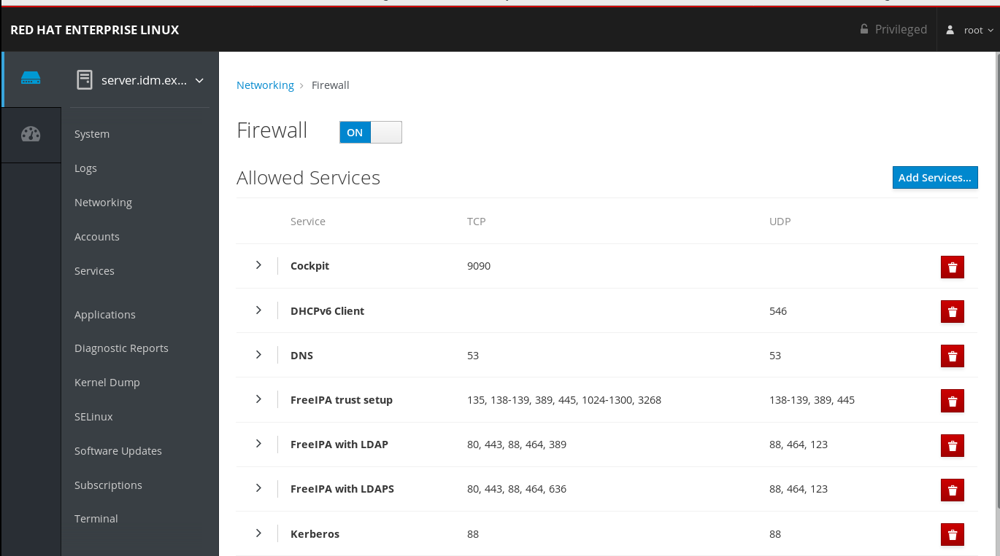
For details about firewall configuration through the web console, see Enabling services on firewall using the web console.
Table 21.2. Ports required by IdM servers in a trust
| Service | Port | Protocol |
|---|---|---|
| Kerberos | 88, 464 | TCP and UDP |
| LDAP | 389 | TCP |
| DNS | 53 | TCP and UDP |
Table 21.3. Ports required by IdM clients in an AD trust
| Service | Port | Protocol |
|---|---|---|
| Kerberos | 88 | UDP and TCP |
The libkrb5 library uses UDP and falls back to the TCP protocol if the data sent from the Key Distribution Centre (KDC) is too large. Active Directory attaches a Privilege Attribute Certificate (PAC) to the Kerberos ticket, which increases the size and requires to use the TCP protocol. To avoid the fall-back and resending the request, by default, SSSD in Red Hat Enterprise Linux 7.4 and later uses TCP for user authentication. If you want to configure the size before libkrb5 uses TCP, set the udp_preference_limit in the /etc/krb.5.conf file. For details, see the krb5.conf(5) man page.
21.5. Configuring DNS and realm settings for a trust
Before you connect Identity Management (IdM) and Active Directory (AD) in a trust, you need to ensure that servers see each other and resolve domain names correctly. This scenario describes configuring DNS to allow using domain names between:
- One primary IdM server using integrated DNS server and Certification Authority.
- One AD Domain Controller.
DNS settings require:
- Configuring DNS zones in the IdM server
- Configuring conditional DNS forwarding in AD
- Verifying correctness of the DNS configuration
21.5.1. Unique primary DNS domains
In Windows, every domain is a Kerberos realm and a DNS domain at the same time. Every domain managed by the domain controller needs to have its own dedicated DNS zone. The same applies when Identity Management (IdM) is trusted by Active Directory (AD) as a forest. AD expects IdM to have its own DNS domain. For the trust setup to work, the DNS domain needs to be dedicated to the Linux environment.
Each system must have its own unique primary DNS domain configured. For example:
-
ad.example.comfor AD andidm.example.comfor IdM -
example.comfor AD andidm.example.comfor IdM -
ad.example.comfor AD andexample.comfor IdM
The most convenient management solution is an environment where each DNS domain is managed by integrated DNS servers, but it is possible to use any other standard-compliant DNS server as well.
- Kerberos realm names as upper-case versions of primary DNS domain names
-
Kerberos realm names must be the same as the primary DNS domain names, with all letters uppercase. For example, if the domain names are
ad.example.comfor AD andidm.example.comfor IdM, the Kerberos realm names are required to beAD.EXAMPLE.COMandIDM.EXAMPLE.COM. - DNS records resolvable from all DNS domains in the trust
- All machines must be able to resolve DNS records from all DNS domains involved in the trust relationship.
- No overlap between IdM and AD DNS domains
- Machines joined to IdM can be distributed over multiple DNS domains. DNS domains containing IdM clients must not overlap with DNS domains containing machines joined to AD. The primary IdM DNS domain must have proper SRV records to support AD trusts.
You can acquire a list of the required SRV records specific to your system setup by running the following command:
$ ipa dns-update-system-records --dry-run
The generated list can look for example like this:
IPA DNS records: _kerberos-master._tcp.idm.example.com. 86400 IN SRV 0 100 88 server.idm.example.com. _kerberos-master._udp.idm.example.com. 86400 IN SRV 0 100 88 server.idm.example.com. _kerberos._tcp.idm.example.com. 86400 IN SRV 0 100 88 server.idm.example.com. _kerberos._tcp.idm.example.com. 86400 IN SRV 0 100 88 server.idm.example.com. _kerberos.idm.example.com. 86400 IN TXT "IDM.EXAMPLE.COM" _kpasswd._tcp.idm.example.com. 86400 IN SRV 0 100 464 server.idm.example.com. _kpasswd._udp.idm.example.com. 86400 IN SRV 0 100 464 server.idm.example.com. _ldap._tcp.idm.example.com. 86400 IN SRV 0 100 389 server.idm.example.com. _ipa-ca.idm.example.com. 86400 IN A 192.168.122.2
For other DNS domains that are part of the same IdM realm, it is not required for the SRV records to be configured when the trust to AD is configured. The reason is that AD domain controllers do not use SRV records to discover KDCs but rather base the KDC discovery on name suffix routing information for the trust.
21.5.2. Configuring DNS zones in the IdM Web UI
This section describes how to add a new DNS forward zone to the Identity Management (IdM) server.
DNS forward zones enables you to forward DNS queries for a specific zone to a different DNS server.
For example, on your IdM server, you want to forward queries for the Active Directory (AD) domain.
Prerequisites
- Access to the IdM Web UI with a user account which have administrator rights.
- Correctly configured DNS server.
Procedure
- Log in to the IdM Web UI with administrator privileges. For details, see Accessing the IdM Web UI in a web browser.
- Click on the Network Services tab.
- Click on the DNS tab.
In the drop down menu, click on the DNS Forward Zones item.
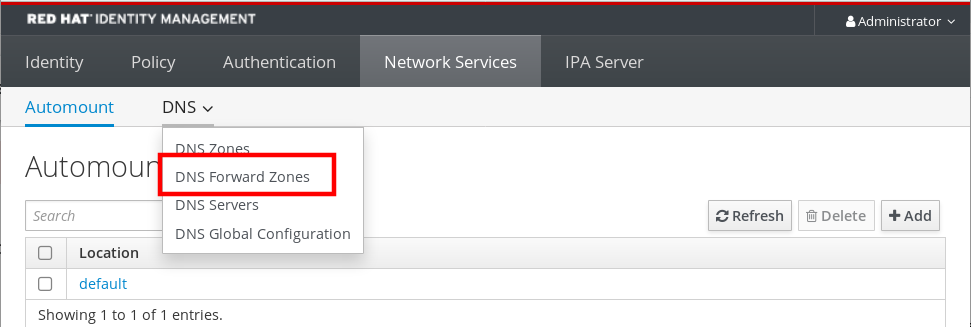
- Click on the Add button.
- In the Add DNS forward zone dialog box, add a zone name.
- In the Zone forwarders item, click on the Add button.
- In the Zone forwarders field, add the IP address of the server for which you want to create the new forward zone.
Click on the Add button.
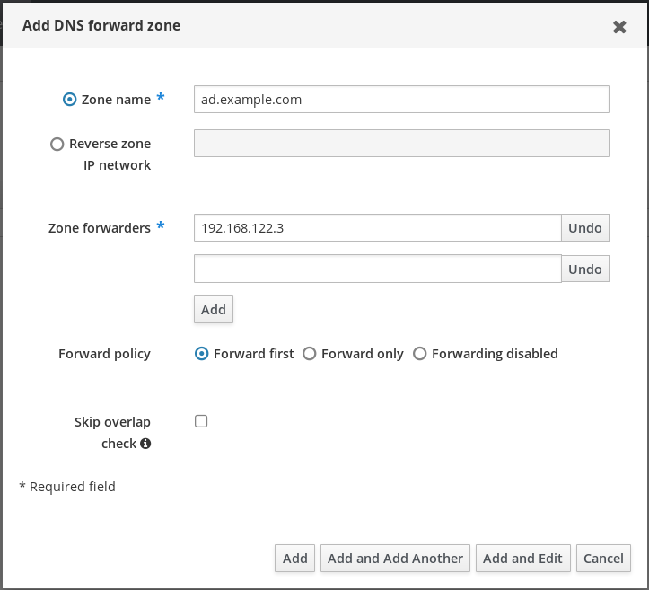
The forwarded zone has been added to the DNS settings and you can verify it in the DNS Forward Zones settings. The Web UI informs you about success with the following pop-up message: DNS Forward Zone successfully added.
You can perform the same procedure in the command line with the following command:
# ipa dnsforwardzone-add $AD_DOMAIN --forwarder=$AD_IP_ADDR --forward-policy=only
The Web UI can display a warning about DNSSEC validation failure after adding a new forward zone to the configuration.
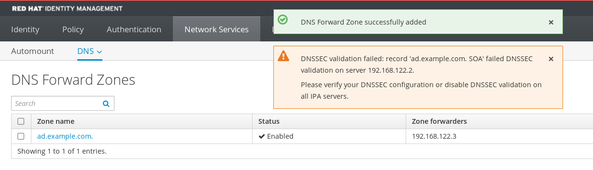
DNSSEC (Domain Name System Security Extensions) secures DNS data with a digital signature to protect DNS from attacks. The DNSSEC service is enabled by default in the IdM server. The warning appeared because the remote DNS server didn’t also use the DNSSEC. Now, you can:
- Enable DNSSEC on the remote DNS server.
-
Disable the DNSSEC validation in the
/etc/named.conffile saved in the IdM server:
dnssec-validation no;
After saving the configuration change, do not forget to restart the ipactl service:
# ipactl restart
The warning will not appear again.
To verify that the dns zone has been created successfully, use the nslookup command with the name of the remote DNS server:
$ nslookup ad.example.com Server: 192.168.122.2 Address: 192.168.122.2#53 No-authoritative answer: Name: ad.example.com Address: 192.168.122.3
If the domain forwarding is configured correctly, nslookup will show you an IP address of the remote DNS server.
21.5.3. Configuring DNS forwarding in AD
This section describes how to set up a DNS forwarding in Active Directory (AD) for the Identity Management (IdM) server.
Prerequisites
- Windows Server with AD installed.
- DNS port open on both servers.
Procedure
- Log in to the Windows Server.
- Open Server Manager.
- Open DNS Manager.
In Conditional Forwarders, add a new conditional forwarder with:
- The IdM server IP address
-
A fully qualified domain name, for example,
server.idm.example.com
- Save the settings.
21.5.4. Verifying the DNS configuration
Before configuring trust, verify that the Identity Management (IdM) and Active Directory (AD) servers can resolve themselves and each other.
Prerequisites
- You need to be logged in with sudo permissions.
Procedure
Run a DNS query for the Kerberos over UDP and LDAP over TCP service records.
[admin@server ~]# dig +short -t SRV _kerberos._udp.idm.example.com. 0 100 88 server.ipa.example.com. [admin@server ~]# dig +short -t SRV _ldap._tcp.idm.example.com. 0 100 389 server.idm.example.com.
The commands are expected to list all IdM servers.
Run a DNS query for the TXT record with the IdM Kerberos realm name. The obtained value is expected to match the Kerberos realm you specified when installing IdM.
[admin@server ~]# dig +short -t TXT _kerberos.idm.example.com. "IDM.EXAMPLE.COM"
Verify that IdM is able to resolve service records for AD with a command that runs a DNS query for Kerberos over UDP and LDAP over TCP service records:
[admin@server ~]# dig +short -t SRV _kerberos._udp.dc._msdcs.ad.example.com. 0 100 88 addc1.ad.example.com. [admin@server ~]# dig +short -t SRV _ldap._tcp.dc._msdcs.ad.example.com. 0 100 389 addc1.ad.example.com.
21.6. Setting up a trust
This section describes how to configure the Identity Management (IdM)/Active Directory (AD) trust on the IdM side using the command line.
Prerequisites
- DNS correctly configured. Both IdM and AD servers must be able to resolve each other names. For details, see Configuring DNS and realm settings for a trust.
- Having supported versions of AD and IdM deployed. For details, see Supported versions of Windows Server.
- Obtained a Kerberos ticket. For details, see Using kinit to log in to IdM manually.
21.6.1. Preparing the IdM server for the trust
Before you can establish a trust with AD and if you want to set up Samba on an IdM client, you must prepare the IdM domain using the ipa-adtrust-install utility on an IdM server. However, even if both situations apply, you must run ipa-adtrust-install only once on an IdM master.
Prerequisites
- IdM is installed.
Procedure
Install the required packages:
[root@ipaserver ~]# yum install ipa-server ipa-server-trust-ad samba-client
Authenticate as the IdM administrative user:
[root@ipaserver ~]# kinit admin
Run the
ipa-adtrust-installutility:[root@ipaserver ~]# ipa-adtrust-install
The DNS service records are created automatically if IdM was installed with an integrated DNS server.
If IdM was installed without an integrated DNS server,
ipa-adtrust-installprints a list of service records that must be manually added to DNS before you can continue.The script prompts you that the
/etc/samba/smb.confalready exists and will be rewritten:WARNING: The smb.conf already exists. Running ipa-adtrust-install will break your existing Samba configuration. Do you wish to continue? [no]: yes
The script prompts you to configure the
slapi-nisplug-in, a compatibility plug-in that allows older Linux clients to work with trusted users:Do you want to enable support for trusted domains in Schema Compatibility plugin? This will allow clients older than SSSD 1.9 and non-Linux clients to work with trusted users. Enable trusted domains support in slapi-nis? [no]: yes
When prompted, enter the NetBIOS name for the IdM domain or press Enter to accept the name suggested:
Trust is configured but no NetBIOS domain name found, setting it now. Enter the NetBIOS name for the IPA domain. Only up to 15 uppercase ASCII letters, digits and dashes are allowed. Example: EXAMPLE. NetBIOS domain name [IDM]:
You are prompted to run the SID generation task to create a SID for any existing users:
Do you want to run the ipa-sidgen task? [no]: yes
When the directory is first installed, at least one user (the IdM administrator) exists and as this is a resource-intensive task, if you have a high number of users, you can run this at another time.
Make sure that DNS is properly configured, as described in Verifying the DNS configuration for a trust.
ImportantEvery time you run
ipa-adtrust-install, Red Hat strongly recommends you to verify the DNS configuration as described in Verifying the DNS configuration for a trust every time after runningipa-adtrust-install, especially if IdM or AD do not use integrated DNS servers.Restart the
ipaservice:[root@ipaserver ~]# systemctl restart ipa
Use the
smbclientutility to verify that Samba responds to Kerberos authentication from the IdM side:[root@ipaserver ~]# smbclient -L server.idm.example.com -k lp_load_ex: changing to config backend registry Sharename Type Comment --------- ---- ------- IPC$ IPC IPC Service (Samba 4.10.4) ...
21.6.2. Setting up a trust agreement using the command line
This section describes on how to set up the trust agreement using the command line. The Identity Management (IdM) server allows you to configure three types of trust agreements:
- One-way trust — default option. One-way trust enables Active Directory (AD) users and groups to access resources in IdM, but not the other way around. The IdM domain trusts the AD forest, but the AD forest does not trust the IdM domain.
Two-way trust — Two-way trust enables AD users and groups to access resources in IdM. However, the two-way trust in IdM does not give the users any additional rights compared to the one-way trust solution in AD. Both solutions are considered equally secure because of default cross-forest trust SID filtering settings.
-
To create the two-way trust, add the following option to the command:
--two-way=true
-
To create the two-way trust, add the following option to the command:
External trust for a trust relationship between domains that are in different forests.
-
To create the external trust, add the following option to the command:
--external=true
-
To create the external trust, add the following option to the command:
In this section, the steps below shows you how to create a one-way trust agreement.
Prerequisites
- User name and password of a Windows administrator.
Procedure
Create a trust agreement for the AD domain and the IdM domain by using the
ipa trust-addcommand:[root@server ~]# ipa trust-add --type=type ad_domain_name --admin ad_admin_username --password
The ipa trust-add command configures the IdM server as a trust controller by default.
21.6.3. Setting up a trust agreement in the IdM Web UI
This section describes how to configure the Identity Management (IdM)/Active Directory (AD) trust agreement on the IdM side using the IdM Web UI.
Prerequisites
- DNS is correctly configured. Both IdM and AD servers must be able to resolve each other names.
- Supported versions of AD and IdM are deployed.
- You have obtained a Kerberos ticket
- Before creating a trust in the Web UI, prepare the IdM server for the trust as described in: Section 21.6.1, “Preparing the IdM server for the trust”
- You need to be logged in as an IdM administrator
Procedure
- Log in to the IdM Web UI with administrator privileges. For details, see Accessing the IdM Web UI in a web browser.
- In the IdM Web UI, click the IPA Server tab.
- In the IPA Server tab, click the Trusts tab.
In the drop down menu, select the Trusts option.
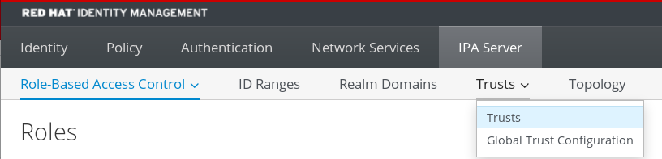
- Click the Add button.
- In the Add Trust dialog box, enter the name of the Active Directory domain.
In the Account and Password fields, add the administrator credentials of the Active Directory administrator.
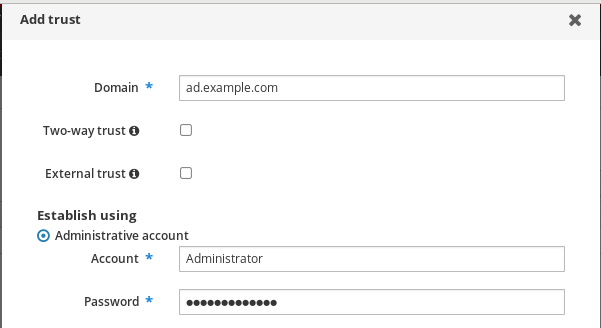
- [Optional] Select Two-way trust, if you want to enable AD users and groups to access resources in IdM. However, the two-way trust in IdM does not give the users any additional rights compared to the one-way trust solution in AD. Both solutions are considered equally secure because of default cross-forest trust SID filtering settings.
- [Optional] If your domains are in different forests, select External trust.
- Click Add.
If the trust has been successfully added to the IdM server, you can see the green pop-up window in the IdM Web UI. It means that the:
- Domain name exists
- User name and password of the Windows Server has been added correctly.
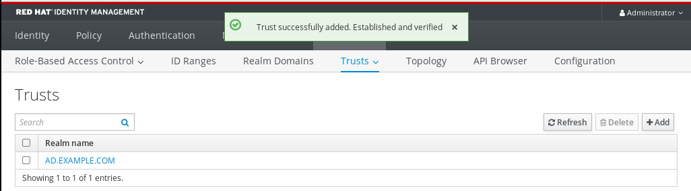
Now you can continue to test the trust connection and Kerberos authentication.
21.6.4. Verifying the Kerberos configuration
To verify the Kerberos configuration, test if it is possible to obtain a ticket for an Identity Management (IdM) user and if the IdM user can request service tickets.
Procedure
Request a ticket for an Active Directory (AD) user:
[root@ipaserver ~]# kinit user@AD.EXAMPLE.COM
Request service tickets for a service within the IdM domain:
[root@server ~]# kvno -S host server.idm.example.com
If the AD service ticket is successfully granted, there is a cross-realm ticket-granting ticket (TGT) listed with all of the other requested tickets. The TGT is named krbtgt/IPA.DOMAIN@AD.DOMAIN.
[root@server ]# klist Ticket cache: KEYRING:persistent:0:krb_ccache_hRtox00 Default principal: user@AD.EXAMPLE.COM Valid starting Expires Service principal 03.05.2016 18:31:06 04.05.2016 04:31:01 host/server.idm.example.com@IDM.EXAMPLE.COM renew until 04.05.2016 18:31:00 03.05.2016 18:31:06 04.05.2016 04:31:01 krbtgt/IDM.EXAMPLE.COM@AD.EXAMPLE.COM renew until 04.05.2016 18:31:00 03.05.2016 18:31:01 04.05.2016 04:31:01 krbtgt/AD.EXAMPLE.COM@AD.EXAMPLE.COM renew until 04.05.2016 18:31:00
The localauth plug-in maps Kerberos principals to local System Security Services Daemon (SSSD) user names. This allows AD users to use Kerberos authentication and access Linux services, which support GSSAPI authentication directly.
21.6.5. Verifying the trust configuration on IdM
Before configuring trust, verify that the Identity Management (IdM) and Active Directory (AD) servers can resolve themselves and each other.
Prerequisites
- You need to be logged in with administrator privileges.
Procedure
Run a DNS query for the MS DC Kerberos over UDP and LDAP over TCP service records.
[root@server ~]# dig +short -t SRV _kerberos._udp.dc._msdcs.idm.example.com. 0 100 88 server.idm.example.com. [root@server ~]# dig +short -t SRV _ldap._tcp.dc._msdcs.idm.example.com. 0 100 389 server.idm.example.com.
These commands list all IdM servers on which
ipa-adtrust-installhas been executed. The output is empty ifipa-adtrust-installhas not been executed on any IdM server, which is typically before establishing the first trust relationship.Run a DNS query for the Kerberos over UDP and LDAP over TCP service records to verify that IdM is able to resolve service records for AD:
[root@server ~]# dig +short -t SRV _kerberos._udp.dc._msdcs.ad.example.com. 0 100 88 addc1.ad.example.com. [root@ipaserver ~]# dig +short -t SRV _ldap._tcp.dc._msdcs.ad.example.com. 0 100 389 addc1.ad.example.com.
.
21.6.6. Verifying the trust configuration on AD
After configuring the trust, verify that:
- The Identity Management (IdM)-hosted services are resolvable from the Active Directory (AD) server.
- AD services are resolvable from the AD server.
Prerequisites
- You need to be logged in with administrator privileges.
Procedure
On the AD server, set the
nslookup.exeutility to look up service records.C:\>nslookup.exe > set type=SRV
Enter the domain name for the Kerberos over UDP and LDAP over TCP service records.
> _kerberos._udp.idm.example.com. _kerberos._udp.idm.example.com. SRV service location: priority = 0 weight = 100 port = 88 svr hostname = server.idm.example.com > _ldap._tcp.ipa.example.com _ldap._tcp.idm.example.com SRV service location: priority = 0 weight = 100 port = 389 svr hostname = server.idm.example.comChange the service type to TXT and run a DNS query for the TXT record with the IdM Kerberos realm name.
C:\>nslookup.exe > set type=TXT > _kerberos.idm.example.com. _kerberos.idm.example.com. text = "IDM.EXAMPLE.COM"Run a DNS query for the MS DC Kerberos over UDP and LDAP over TCP service records.
C:\>nslookup.exe > set type=SRV > _kerberos._udp.dc._msdcs.idm.example.com. _kerberos._udp.dc._msdcs.idm.example.com. SRV service location: priority = 0 weight = 100 port = 88 svr hostname = server.idm.example.com > _ldap._tcp.dc._msdcs.idm.example.com. _ldap._tcp.dc._msdcs.idm.example.com. SRV service location: priority = 0 weight = 100 port = 389 svr hostname = server.idm.example.comThe command is expected to list all IdM servers on which the
ipa-adtrust-installutility has been executed. For details aboutipa-adtrust-install, see Preparing the IdM server for the trust. Note that the output is empty ifipa-adtrust-installhas not been executed on any IdM server, which is typically before establishing the first trust relationship.Verify that AD services are resolvable from the AD server.
C:\>nslookup.exe > set type=SRV
Enter the domain name for the Kerberos over UDP and LDAP over TCP service records.
> _kerberos._udp.dc._msdcs.ad.example.com. _kerberos._udp.dc._msdcs.ad.example.com. SRV service location: priority = 0 weight = 100 port = 88 svr hostname = addc1.ad.example.com > _ldap._tcp.dc._msdcs.ad.example.com. _ldap._tcp.dc._msdcs.ad.example.com. SRV service location: priority = 0 weight = 100 port = 389 svr hostname = addc1.ad.example.com
21.7. Removing the trust using the IdM Web UI
This section describes how to remove the Identity Management (IdM)/Active Directory (AD) trust on the IdM side using the IdM Web UI.
Prerequisites
- You have obtained a Kerberos ticket. For details, see Logging in to IdM in the Web UI: Using a Kerberos ticket.
Procedure
- Log in to the IdM Web UI with administrator privileges. For details, see Accessing the IdM Web UI in a web browser.
- In the IdM Web UI, click the IPA Server tab.
- In the IPA Server tab, click the Trusts tab.
Select the trust you want to remove.
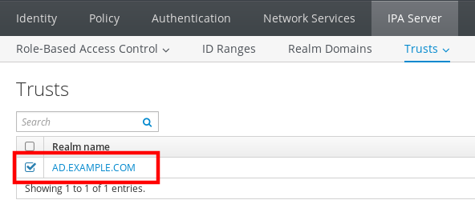
- Click the Delete button.
In the Remove trusts dialog box, click Delete.
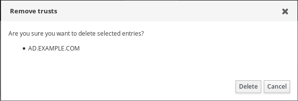
If the trust is successfully deleted, the Web UI displays a green pop-up with the text:
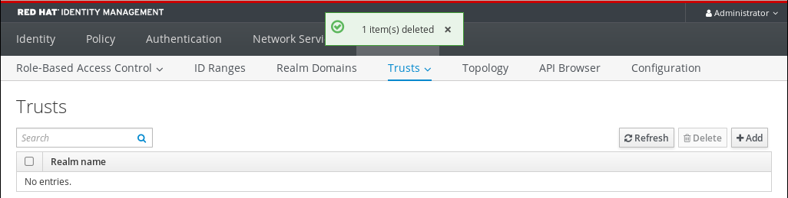
Part III. Migrating IdM from RHEL 7 to RHEL 8 and keeping it up-to-date
Chapter 22. Migrating IdM from RHEL 7 to 8
This procedure describes how to migrate all Identity Management (IPA) data and configuration from a Red Hat Enterprise Linux (RHEL) 7 server to a RHEL 8 server. The migration procedure includes:
- Installing an IdM server on the RHEL 8 system. For details, see Section 22.2, “Installing the RHEL 8 Replica”.
- Making the RHEL 8 server the certificate authority (CA) renewal master. For details, see Section 22.3, “Moving the CA renewal master to RHEL 8”.
- Stopping the generation of the certificate revocation list (CRL) on the RHEL 7 server and redirecting CRL requests to RHEL 8. For details, see Section 22.4, “Stopping CRL generation on RHEL 7 IdM CA master”.
- Starting the generation of the CRL on the RHEL 8 server. For details, see Section 22.5, “Starting CRL generation on the new RHEL 8 IdM CA master”.
- Stopping and decommissioning the original RHEL 7 CA master. For details, see Section 22.6, “Stopping and decommissioning the RHEL 7 server”.
In the following procedures:
-
rhel8.example.comis the RHEL 8 system that will become the new CA master. rhel7.example.comis the original RHEL 7 CA master. To identify which Red Hat Enterprise Linux 7 server is the master CA server, run the following command on any IdM server:[root@rhel7 ~]# ipa config-show | grep "CA renewal master" IPA CA renewal master: rhel7.example.com
If your IdM deployment is CA-less, any IdM server running on RHEL 7 can be
rhel7.example.com.
22.1. Prerequisites for Migrating IdM from RHEL 7 to 8
On rhel7.example.com:
- Upgrade the system to the latest RHEL 7 version.
Update the ipa-* packages to their latest version:
[root@rhel7 ~]# yum update ipa-*
WarningWhen upgrading multiple Identity Management (IdM) servers, wait at least 10 minutes between each upgrade.
When two or more servers are upgraded simultaneously or with only short intervals between the upgrades, there is not enough time to replicate the post-upgrade data changes throughout the topology, which can result in conflicting replication events.
On rhel8.example.com:
-
Make sure the
rhel8.example.comsystem meets the requirements listed in Chapter 1, Preparing the system for IdM server installation. - Make sure that the replica is part of the domain for which the IdM DNS server is authoritative.
Update the ipa-* packages to their latest version:
[root@rhel8 ~]# yum update ipa-*
Related information
-
For details on using the
yumutility, see theyum(8)manual pages.
22.2. Installing the RHEL 8 Replica
List which server roles are present in your RHEL 7 environment:
[root@rhel7 ~]# ipa server-role-find --status enabled ---------------------- 4 server roles matched ---------------------- Server name: rhel7.example.com Role name: CA server Role status: enabled Server name: replica7.example.com Role name: DNS server Role status: enabled Server name: rhel7.example.com Role name: DNS server Role status: enabled Server name: rhel7.example.com Role name: NTP server Role status: enabled [... output truncated ...]Install the Identity Management IdM server on
rhel8.example.comas a replica of the IdM RHEL 7 server, including all the server roles present on yourrhel7.example.com. To install all the roles from the example above, use these options with theipa-replica-installcommand:-
--setup-cato set up the Certificate System component --setup-dnsand--forwarderto configure an integrated DNS server and set a forwarder to take care of DNS queries that go outside the IdM domainTo set up an IdM server with the ip address of 192.0.2.1 which uses a forwarder with the ip address of 192.0.2.20:
[root@rhel8 ~]# ipa-replica-install --setup-ca --ip-address 192.0.2.1 --setup-dns --forwarder 192.0.2.20
You do not need to specify the RHEL 7 IdM server because if DNS is working correctly,
rhel8.example.comwill find it using DNS autodiscovery.-
After the installation completes, verify that the IdM services are running on
rhel8.example.com:[root@rhel8 ~]# ipactl status Directory Service: RUNNING [... output truncated ...] ipa: INFO: The ipactl command was successfulVerify that
rhel7.example.comandrhel8.example.comcertificate authorities (CAs) are both configured as master servers:[root@rhel8 ~]$
kinit admin[root@rhel8 ~]$ipa-csreplica-manage listrhel7.example.com: master rhel8.example.com: masterOptionally, to display details about the replication agreement between
rhel7.example.comandrhel8.example.com:[root@rhel8 ~]# ipa-csreplica-manage list --verbose rhel8.example.com Directory Manager password: rhel7.example.com last init status: None last init ended: 1970-01-01 00:00:00+00:00 last update status: Error (0) Replica acquired successfully: Incremental update succeeded last update ended: 2019-02-13 13:55:13+00:00
22.3. Moving the CA renewal master to RHEL 8
Complete the steps in this section only if your IdM deployment uses an embedded certificate authority (CA).
On rhel8.example.com, configure rhel8.example.com as the new CA renewal master:
Configure
rhel8.example.comto handle CA subsystem certificate renewal:[root@rhel8 ~]# ipa config-mod --ca-renewal-master-server rhel8.example.com ... IPA masters: rhel7.example.com, rhel8.example.com IPA CA servers: rhel7.example.com, rhel8.example.com IPA NTP servers: rhel7.example.com, rhel8.example.com IPA CA renewal master: rhel8.example.comThe output confirms that the update was successful.
22.4. Stopping CRL generation on RHEL 7 IdM CA master
Complete the steps in this section only if your IdM deployment uses an embedded certificate authority (CA).
This section describes how to stop the generation of the Certificate Revocation List (CRL) on the rhel7.example.com master CA using the ipa-crlgen-manage command.
Prerequisites
- You must be logged in as root.
Procedure
Optionally, check if rhel7.example.com is generating the CRL:
[root@rhel7 ~]# ipa-crlgen-manage status CRL generation: enabled Last CRL update: 2019-10-31 12:00:00 Last CRL Number: 6 The ipa-crlgen-manage command was successful
Stop generating CRL on the rhel7.example.com server:
[root@rhel7 ~]# ipa-crlgen-manage disable Stopping pki-tomcatd Editing /var/lib/pki/pki-tomcat/conf/ca/CS.cfg Starting pki-tomcatd Editing /etc/httpd/conf.d/ipa-pki-proxy.conf Restarting httpd CRL generation disabled on the local host. Please make sure to configure CRL generation on another master with ipa-crlgen-manage enable. The ipa-crlgen-manage command was successfulOptionally, check if the rhel7.example.com server stopped generating CRL:
[root@rhel7 ~]# ipa-crlgen-manage status
The rhel7.example.com server stopped generating CRL. The next step is to enable CRL generation on rhel8.example.com.
22.5. Starting CRL generation on the new RHEL 8 IdM CA master
Complete the steps in this section only if your IdM deployment uses an embedded certificate authority (CA).
Prerequisites
- You must be logged in as root on the rhel8.example.com machine.
Procedure
To start generating CRL on rhel8.example.com, use the
ipa-crlgen-manage enablecommand:[root@rhel8 ~]# ipa-crlgen-manage enable Stopping pki-tomcatd Editing /var/lib/pki/pki-tomcat/conf/ca/CS.cfg Starting pki-tomcatd Editing /etc/httpd/conf.d/ipa-pki-proxy.conf Restarting httpd Forcing CRL update CRL generation enabled on the local host. Please make sure to have only a single CRL generation master. The ipa-crlgen-manage command was successfulTo check if CRL generation is enabled, use the
ipa-crlgen-manage statuscommand:[root@rhel8 ~]# ipa-crlgen-manage status CRL generation: enabled Last CRL update: 2019-10-31 12:10:00 Last CRL Number: 7 The ipa-crlgen-manage command was successful
22.6. Stopping and decommissioning the RHEL 7 server
Make sure that all, even the latest data is correctly migrated from
rhel7.example.comtorhel8.example.com. For example:Add a new user on
rhel7.example.com:[root@rhel7 ~]# ipa user-add random_user First name: random Last name: userCheck that the user has been replicated to
rhel8.example.com:[root@rhel8 ~]# ipa user-find random_user -------------- 1 user matched -------------- User login: random_user First name: random Last name: user
Stop all service on
rhel7.example.comto force domain discovery to the newrhel8.example.comserver.[root@rhel7 ~]# ipactl stop Stopping CA Service Stopping pki-ca: [ OK ] Stopping HTTP Service Stopping httpd: [ OK ] Stopping MEMCACHE Service Stopping ipa_memcached: [ OK ] Stopping DNS Service Stopping named: . [ OK ] Stopping KPASSWD Service Stopping Kerberos 5 Admin Server: [ OK ] Stopping KDC Service Stopping Kerberos 5 KDC: [ OK ] Stopping Directory Service Shutting down dirsrv: EXAMPLE-COM... [ OK ] PKI-IPA... [ OK ]After this, the
ipautility will contact the new server through a remote procedure call (RPC).- Remove the RHEL 7 server from the topology by executing the removal commands on the RHEL 8 server. For details, see Chapter 6, Uninstalling an IdM server.
Chapter 23. Updating and downgrading IdM
You can use the yum utility to update the Identity Management (IdM) packages on the system.
To update all IdM packages that are relevant for your profile and that have updates available:
# yum upgrade ipa-*Alternatively, to install or update packages to match the latest version available for your profile from any enabled repository:
# yum distro-sync ipa-*
After you update the IdM packages on at least one server, all other servers in the topology receive the updated schema, even if you do not update their packages. This ensures that any new entries which use the new schema can be replicated among the other servers.
When updating multiple IdM servers, wait at least 10 minutes after updating one server before updating another server. However, the actual time required for a server’s successful update depends on the topology deployed, the latency of the connections, and the number of changes generated by the update.
When two or more servers are updated simultaneously or with only short intervals between the upgrades, there is not enough time to replicate the post-upgrade data changes throughout the topology, which can result in conflicting replication events.
Downgrading IdM packages manually is not supported. Use yum distro-sync to update and downgrade packages in modules.
Do not run the yum downgrade command on any of the ipa-* packages.
Related information
-
For details on using the
yumutility, see theyum(8)manual pages.